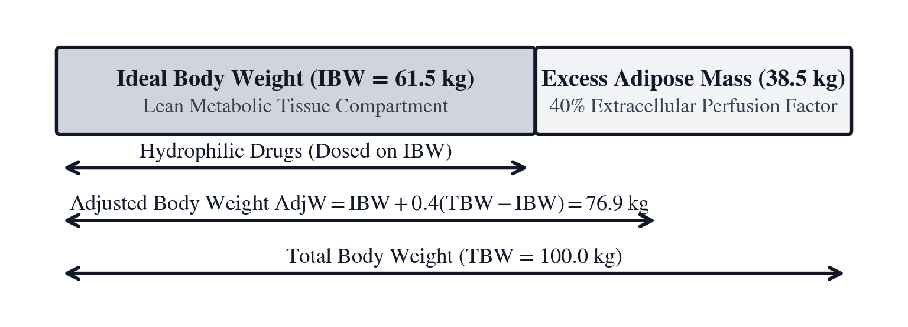

Unit VIII: Clinical Dosing, Renal Clearance & Pharmacokinetics
Clinical medicine is applied biological transport phenomena. The living human body is an interconnected network of fluid compartments bounded by semi-permeable lipid membranes, convective capillary filters, and enzyme-mediated elimination pathways. In outpatient medicine, pharmaceuticals with broad therapeutic indices tolerate standardized adult dosing. In acute inpatient care, however—across oncology wards, resuscitation suites, and intensive care units—that margin of error vanishes. Hydrophilic antibiotics, cytotoxic chemotherapeutics, and continuous vasoactive catecholamines operate within narrow physiological corridors where therapeutic efficacy and catastrophic organ toxicity are separated by small margins of dose and time.
In 1916, Delafield Du Bois and Eugene F. Du Bois encased hospitalized patients at the Russell Sage Institute of Pathology in New York in tight-fitting paper-and-paraffin molds to measure human skin area directly. They demonstrated that basal metabolic rate, extracellular fluid volume, cardiac output, and renal blood flow scale with two-dimensional surface area rather than raw three-dimensional mass. Seven decades later, in a 1987 letter to the New England Journal of Medicine, biostatistician Robert D. Mosteller replaced their cumbersome multi-exponent nomogram with a square-root geometric mean of stature and weight. In outpatient primary care, oral medications are routinely prescribed in fixed adult unit doses because common pharmaceuticals possess a wide therapeutic index—a generous physiological margin between the minimum effective concentration required to treat disease and the toxic threshold at which organ damage begins.
In hospital oncology wards, intensive care units, emergency resuscitation bays, and neonatal nurseries, that margin completely vanishes. Cytotoxic antineoplastic agents, aminoglycoside and glycopeptide antibiotics, antiarrhythmics, and vasoactive catecholamines operate within a narrow therapeutic window. Under-dosing by \(15\%\) allows a systemic infection or malignancy to progress, while over-dosing by \(15\%\) can induce irreversible acute tubular necrosis, permanent vestibular ototoxicity, or fatal ventricular arrhythmias.
The lethal consequence of neglected pharmacokinetic mathematics is permanently etched into medical history by the 1937 Elixir Sulfanilamide catastrophe. Seeking a palatable liquid formulation of the breakthrough antimicrobial sulfanilamide, an untested solvent—diethylene glycol, toxic automotive antifreeze—was compounded without evaluating osmotic absorption or renal metabolism. Over one hundred patients perished in agonizing acute renal failure as toxic glycolic and oxalic acid metabolites precipitated inside tubular lumens and destroyed glomerular nephrons. The disaster led directly to the passage of the 1938 Federal Food, Drug, and Cosmetic Act, mandating that physiological clearance, distribution kinetics, and formulation safety be scientifically proven prior to human administration.
Because two patients who both weigh \(88\text{ kg}\) on a bed scale can differ substantially in skeletal stature and adipose tissue fraction, clinical pharmacology partitions total weight into ideal body weight (IBW, spoken as I-B-W, formulated by Ben Devine in 1974), adjusted body weight (ABW, spoken as A-B-W), total body weight (TBW, spoken as T-B-W), body mass index (BMI, spoken as B-M-I), and body surface area (BSA, spoken as B-S-A), alongside Malcolm Holliday and William Segar's 1957 three-tier pediatric fluid maintenance law.
Administering an accurate initial loading dose solves only the first half of the clinical dosing problem. Recurring maintenance doses must match the speed at which the kidneys and liver clear the compound from blood plasma. In 1953, German pediatrician and pharmacologist Friedrich Hartmut Dost published Der Blutspiegel (The Blood Level), coining the term pharmacokinetics and modeling the human body as a mathematical compartment governed by exponential first-order elimination. A drug distributing across an apparent volume of distribution \(V_d\) and cleared by the kidneys at volumetric flow rate \(\text{CL}\) decays as \(C(t) = C_0 e^{-(\text{CL}/V_d)t}\) with biological time constant \(\tau_{\text{bio}} = V_d / \text{CL}\) and half-life \(t_{1/2} = \ln(2)\,V_d / \text{CL}\). Two decades after Dost, in 1976, Donald Cockcroft and Henry Gault analyzed \(24\text{-hour}\) urine creatinine excretions from \(249\) patients aged \(18\) to \(92\) at Queen Mary Veterans Hospital in Montreal. They proved that steady-state serum creatinine must be scaled by chronological age, dosing weight, and biological sex to estimate the glomerular filtration rate (GFR, spoken as G-F-R) as Creatinine Clearance.
Clinical pharmacology and acute-care nursing guard human physiological equilibrium: partitioning anthropometric compartments, adjusting renal clearances to prevent drug toxicity, titrating continuous vasoactive catecholamines against hemodynamic shock, and budgeting emergency oxygen reserves during critical transport. The SC-80 Clinical Pharmacy, Critical Care & Nursing calculator brings anthropometric modeling, renal clearance, IV drip rates, and one-compartment pharmacokinetics directly to the hospital bedside. Three acute clinical scenarios structure this analysis:
In Chapter 22, we admit a critically ill septic patient, sizing anthropometric body surface area, partitioning lean and obese dosing weights, calculating Cockcroft–Gault renal clearance, and establishing pediatric maintenance fluid rules.
In Chapter 23, we stabilize hemodynamic septic shock, titrating continuous micro-dose vasoactive catecholamines, converting mass flux to volumetric pump rates, calibrating gravity roller clamps, and calculating Parkland burn resuscitation fluids.
In Chapter 24, we manage multi-system critical care, tracking antibiotic trough accumulation across five half-lives, calculating inverse hold times for toxic peaks, balancing arterial blood gas acid-base equilibria, and budgeting compressed oxygen transport reserves.
Chapter 22: Sizing the Dose to the Patient Profile
In the sterile, fluorescent-lit admission bay of an urban medical center's intensive care unit, a \(68\text{-year-old}\) male patient arrives in septic shock secondary to hospital-acquired MRSA bacteremia. The electronic bed scale registers a total body mass of \(W = 88.0\text{ kg}\) (\(194.0\text{ lb}\)), and the patient's height stadiometer reports \(H = 178.0\text{ cm}\) (\(70.08\text{ inches}\)). Urgent blood work drawn in the emergency department reveals an elevated serum creatinine of \(S = 1.60\text{ mg/dL}\) (\(141.4\ \mu\text{mol/L}\)). The attending intensivist orders an immediate intravenous loading dose of vancomycin—a complex glycopeptide antibiotic with a narrow therapeutic index—followed by renal-adjusted maintenance dosing.
Before the hospital cleanroom can compound the medication, the clinical pharmacist must navigate a dangerous physiological reality: total body mass can mislead the clinician.
Human body composition is not a homogeneous fluid reservoir. In an individual with significant adiposity, excess mass consists primarily of white adipose tissue—adipocytes packed with hydrophobic neutral triglycerides. While well-perfused lean skeletal muscle consists of \(70\%\text{ to }75\%\) water, adipose tissue contains only \(10\%\text{ to }20\%\) water and receives less than \(5\%\) of resting cardiac output. Hydrophilic, polar pharmaceuticals like vancomycin, aminoglycosides (gentamicin, tobramycin, amikacin), and beta-lactams dissolve almost exclusively in extracellular fluid and vascular plasma; they do not distribute into inert adipose lipid droplets. If the clinician calculates the vancomycin dose using unadjusted Total Body Weight (\(88.0\text{ kg}\)), the patient will receive a massive overdose, driving toxic antibiotic peaks directly into renal tubular cells and precipitating acute kidney injury. Conversely, if the clinician calculates the dose using strict lean Ideal Body Weight (\(70.5\text{ kg}\)), the dose will be inadequate, failing to clear the bacterial infection from tissues and allowing sepsis to kill the patient.
To dose the patient safely, the clinical team must bind a persistent Patient Profile into the calculator, partition the patient's mass into Mosteller Body Surface Area, Devine Ideal Body Weight, and \(40\%\) Adjusted Body Weight, evaluate Cockcroft–Gault Creatinine Clearance while accounting for age-related sarcopenia, and verify pediatric fluid maintenance rules across differing physiological weight tiers.
Anthropometric Surface Area and Dosing Weight Partitioning
Clinical dosing models map a patient's physical dimensions to apparent physiological compartments. By establishing a persistent Patient Profile ([PAT]), the SC-80 automatically propagates stature, mass, chronological age, and biological sex across renal clearance, body surface area, and infusion solvers without requiring repetitive data re-entry at the bedside.
Adipose Partitioning and Apparent Volume of Distribution
Consider why administering medications based on raw body mass alone is fraught with peril. When a pharmaceutical compound enters the systemic circulation, its initial concentration is determined by the ratio of the administered dose \(D\) to its apparent volume of distribution (\(V_d\)):
In pharmacology, drugs are broadly partitioned into two physicochemical classes: 1. Hydrophilic (Water-Soluble) Drugs: Highly polar molecules (such as aminoglycosides, glycopeptides, and beta-lactams) with low lipid solubility and high plasma protein binding. These agents distribute almost exclusively into extracellular water (vascular plasma and interstitial fluid), with typical distribution volumes of \(V_d \approx 0.20\text{ to }0.30\text{ L/kg}\) of lean body mass. 2. Lipophilic (Fat-Soluble) Drugs: Non-polar molecules (such as diazepam, propofol, fentanyl, and amiodarone) that readily cross cell membranes and partition into neutral lipids. These agents exhibit massive apparent volumes of distribution (\(V_d > 1.0\text{ to }5.0\text{ L/kg}\)), accumulating extensively in adipose tissue.
When treating an obese patient with a hydrophilic drug, white adipose tissue behaves as an inert mass: it contributes virtually zero extracellular fluid for drug dilution, yet adds tens of kilograms to the total reading on the bed scale.
If a clinician doses an obese patient on Total Body Weight (TBW), the administered drug mass is vastly excessive for the patient's actual extracellular fluid volume. Supratherapeutic drug concentrations flood the renal cortex, binding to megalin and cubilin receptor complexes in the brush border of proximal tubular epithelial cells. This triggers lysosomal phospholipidosis, mitochondrial oxidative stress, and extensive acute tubular necrosis—destroying the patient's kidneys.
Conversely, if the clinician doses the patient on strict Ideal Body Weight (IBW), the opposite error occurs: adipose tissue, while mostly fat, still contains a modest interstitial vascular fraction (\(15\%\text{ to }20\%\) water). Sizing the dose strictly to lean mass leaves the drug under-dosed by \(10\%\text{ to }20\%\). Serum concentrations fail to reach the Minimum Effective Concentration (MEC), the bacterial pathogen continues proliferating unchecked, and septic shock progresses to multi-organ system failure.
To resolve this dilemma, clinical pharmacology invented Adjusted Body Weight (ABW): adding a fractional correction—universally validated at \(40\%\) (\(0.40\)) for aminoglycosides and glycopeptides—to lean ideal weight to account for the partial distribution of hydrophilic drugs into adipose extracellular water.
Allometric Scaling: Geometry vs. Fractal Biology
The limitation of raw body mass extends beyond adiposity to the fundamental biophysics of mammalian scaling. In 1883, the German physiologist Max Rubner proposed the Surface Law (\(\text{BMR} \propto M^{2/3}\)), postulating that mammalian basal metabolic rate is constrained by the geometry of heat dissipation across a two-dimensional surface area from a three-dimensional volume (\(S/V \propto L^2 / L^3 = M^{-1/3}\)).
However, in 1932, the Swiss biologist Max Kleiber conducted empirical respiration measurements across species ranging from mice (\(0.02\text{ kg}\)) to bullocks and elephants (\(4000\text{ kg}\)), proving that basal metabolic rate scales not with mass to the \(2/3\) power (\(0.667\)), but with mass to the \(3/4\) power (\(M^{0.75}\)):
In 1997, Geoffrey West, James Brown, and Brian Enquist solved the theoretical puzzle behind Kleiber's Law: mammalian circulatory and respiratory systems do not behave as simple geometric volumes, but as space-filling, fractal branching vascular networks. Because the terminal branch units (capillaries) are invariant in size across all mammals, minimizing hydrodynamic dissipation across the branching hierarchy yields an effective quarter-power allometric scaling exponent (\(D/4 = 3/4\)).
In clinical pharmacology, this creates a fundamental duality: - Metabolic Clearance (\(C_{\text{CL}}\)) and cardiac output scale allometrically with metabolic rate (\(\propto M^{0.75}\)). - Body Surface Area (\(BSA\)) and antineoplastic chemotherapy tolerances scale geometrically with surface area (\(\propto M^{0.667}\) to \(M^{0.5} H^{0.5}\)).
Applying adult linear per-kilogram dosing to pediatric or geriatric patients violates these scaling laws. A \(10\text{ kg}\) child does not have one-seventh the metabolic clearance of a \(70\text{ kg}\) adult; their relative metabolic rate per kilogram is vastly higher. Dosing must follow body surface area or allometrically partitioned weight.
Mosteller Body Surface Area ([BSA]) and Inversion
In oncology, critical-care hemodynamics, and nephrology, basal metabolic rate, resting cardiac output, and glomerular filtration rate scale not with three-dimensional volume, but with two-dimensional Body Surface Area (BSA, spoken as B-S-A, [BSA], \(B\)).
Following the 1916 paper-and-paraffin casting experiments of Delafield Du Bois and Eugene Du Bois, clinicians used a complex multi-exponent equation (\(B = 0.007184 \cdot H^{0.725} \cdot W^{0.425}\)). In subsequent decades, numerous empirical alternatives emerged: - Gehan and George (1970): \(B = 0.0235 \cdot H^{0.42246} \cdot W^{0.51456}\) - Haycock et al. (1978): \(B = 0.024265 \cdot H^{0.3964} \cdot W^{0.5378}\) (widely adopted in pediatrics) - Boyd (1935): \(B = 0.0003207 \cdot H^{0.3} \cdot (W \cdot 1000)^{0.7285 - 0.0188 \log_{10}(W \cdot 1000)}\)
In 1987, Robert D. Mosteller proved in a landmark publication in the New England Journal of Medicine that a clean square-root geometric mean of metric stature (\(H\), in centimeters) and body mass (\(W\), in kilograms) achieves identical statistical precision without cumbersome fractional powers:
Eq. 22.1 — Mosteller Body Surface Area and Inversion $\(B = \sqrt{\frac{H \cdot W}{3600}}\)$
In U.S. customary units (\(H_{\text{in}}\) in inches, \(W_{\text{lb}}\) in pounds), the denominator constant becomes \(3131\):
Inverting Mosteller's equation solves the fundamental inverse clinical problem: given an oncology patient whose antineoplastic chemotherapy protocol is capped at a maximum allowable BSA ceiling \(B\), what is the maximum patient weight \(W\) compatible with that dosage?
In oncology dosing, many cytotoxic protocols enforce strict BSA caps to prevent lethal systemic toxicity. For example, in the Calvert formula for dosing Carboplatin in ovarian and lung cancer:
where GFR is capped at \(125\text{ mL/min}\) to prevent unmonitored bone marrow suppression. Similarly, anthracycline protocols (doxorubicin, daunorubicin) establish lifetime cumulative limits (\(450\text{--}550\text{ mg/m}^2\)) to avoid irreversible dilated cardiomyopathy. The clinician uses Mosteller inversion to determine physiological boundary weights beyond which chemotherapy doses must be capped.
For our septic ICU patient (\(H = 178.0\text{ cm}\), \(W = 88.0\text{ kg}\)):
If this patient's chemotherapy protocol capped his surface area at \(B = 1.90\text{ m}^2\), the maximum allowable dosing weight would be:

Partitioning Dosing Weights: Devine IBW and 40% ABW ([f] [IBW] and [g] [ABW])
To partition a patient's physical mass between lean metabolizing tissue and excess adipose tissue, clinical pharmacy relies on the Devine Formula.
Formulated in 1974 by Ben J. Devine to standardize the dosing of theophylline in patients with congestive heart failure and chronic obstructive pulmonary disease, the formula establishes a baseline lean mass for an individual of \(60\text{ inches}\) (\(5\text{ feet}\), \(152.4\text{ cm}\)) stature and adds a linear increment for each inch of height above \(60\text{ inches}\):
Eq. 22.2 — Devine Ideal Body Weight and Adipose Adjustment $\(\text{IBW}_{\text{male}}\text{ (kg)} = 50.0 + 2.3 \left(H_{\text{in}} - 60 ight) = 50.0 + 0.9055 \left(H_{\text{cm}} - 152.4 ight)\)$
In 1983, alternative lean mass formulations were published by Robinson et al. (\(\text{IBW}_{\text{male}} = 52 + 1.9(H - 60)\)) and Miller et al. (\(\text{IBW}_{\text{male}} = 56.2 + 1.41(H - 60)\)). However, clinical pharmacokinetic literature, FDA drug labeling, and hospital dosing guidelines universally standardized on Devine's 1974 equations.
When a patient's actual Total Body Weight (\(W = \text{TBW}\)) exceeds \(120\%\) of their Ideal Body Weight (\(\text{TBW} / \text{IBW} \ge 1.20\)), the patient is clinically obese. For hydrophilic medications (aminoglycosides, vancomycin, daptomycin), the dosing mass must include a \(40\%\) correction factor (\(\alpha = 0.40\)) for adipose tissue extracellular fluid:
For our male patient (\(H = 178.0\text{ cm} = 70.0787\text{ inches}\), \(W = 88.0\text{ kg}\)):
Comparing actual mass to ideal mass:
Because the ratio exceeds \(1.20\), the patient has crossed into the obesity tier. Calculating Adjusted Body Weight:
Clinical Amputation Corrections
In trauma and diabetic vascular surgery, patients frequently undergo limb amputations. Because skeletal stature remains unchanged while body mass drops precipitously, standard Devine formulas significantly overestimate lean mass. To compensate, clinical pharmacy applies the Amputee Ideal Body Weight Adjustment:
| Anatomical Segment | Percentage of Total Body Weight | Clinical Considerations |
|---|---|---|
| Entire Upper Limb (Arm) | \(6.5\%\) | Shoulder disarticulation |
| Forearm and Hand | \(2.3\%\) | Below-elbow amputation |
| Hand Alone | \(0.8\%\) | Wrist disarticulation |
| Entire Lower Limb (Leg) | \(16.0\%\) | Hip disarticulation / transfemoral |
| Lower Leg and Foot (BKA) | \(5.9\%\) | Below-knee amputation |
| Foot Alone | \(1.5\%\) | Syme's amputation |
For example, if our patient had previously undergone a unilateral below-knee amputation (\(5.9\%\)), his true metabolizing ideal mass would adjust to \(73.181 \times (1 - 0.059) = 68.86\text{ kg}\).
Similarly, in chronic spinal cord injury (paraplegia and tetraplegia), severe muscular denervation atrophy reduces active skeletal muscle mass by \(10\%\text{ to }15\%\) in paraplegia and \(15\%\text{ to }20\%\) in tetraplegia. Failing to reduce the baseline IBW leads to substantial overestimation of lean clearance.
Glomerular Filtration Kinetics and Bedside Creatinine Clearance
Once the patient's dosing weight is correctly partitioned, the clinician must quantify the kidney's capacity to filter drug molecules from the bloodstream.
Physiology of Creatinine Elimination and the Cockcroft–Gault Equation ([GFR])
Glomerular filtration is a purely convective, passive physical process. Blood enters the renal glomerulus through the afferent arteriole under hydrostatic pressure (\(\approx 50\text{ mmHg}\)). Water and non-protein-bound solutes filter across three distinct barriers: 1. Fenestrated endothelial cells of glomerular capillaries (pore size \(\approx 70\text{ nm}\)). 2. The negatively charged glomerular basement membrane (heparan sulfate proteoglycans repelling anionic proteins). 3. Podocyte filtration slit diaphragms (bridged by nephrin proteins, slit size \(\approx 4\text{ to }14\text{ nm}\)).
Solutes smaller than \(15\text{ kDa}\) (including inulin, creatinine, urea, and most unconjugated pharmaceutical drugs) filter freely across the slit diaphragms.
Creatinine (\(\text{MW} = 113.12\text{ g/mol}\)) is a waste product generated by the non-enzymatic dehydration of creatine and creatine phosphate in skeletal muscle tissue. In healthy humans, muscle mass is relatively stable, generating creatinine at a constant rate (\(\approx 15\text{ to }25\text{ mg/kg/day}\) in young males; \(10\text{ to }20\text{ mg/kg/day}\) in young females).
Because creatinine is freely filtered at the glomerulus, undergoes minimal tubular reabsorption, and experiences only modest proximal tubular secretion (\(10\%\text{ to }15\%\) via organic cation transporters OCT2 and MATE1), its steady-state clearance provides an excellent clinical surrogate for Glomerular Filtration Rate (GFR).
In 1976, Canadian nephrologists Donald W. Cockcroft and M. Henry Gault analyzed steady-state creatinine excretion from \(249\) patients aged \(18\) to \(92\) at Queen Mary Veterans Hospital in Montreal. They observed that as humans age beyond 20 years, progressive nephrosclerosis, glomerular obsolescence, and age-related sarcopenia cause creatinine clearance to decline linearly. They synthesized these observations into the classic Cockcroft–Gault Equation:
Eq. 22.3 — Cockcroft–Gault Creatinine Clearance Estimation $\(\text{CrCl}_{\text{male}}\text{ (mL/min)} = \frac{(140 - \text{Age}) \times W_{\text{dosing}}}{72 \times S_{\text{Cr}}}\)$
where: - \(\text{Age}\) is chronological age in years. - \(W_{\text{dosing}}\) is the partitioned dosing weight in kilograms (\(\text{kg}\)). - \(S_{\text{Cr}}\) is steady-state serum creatinine in milligrams per deciliter (\(\text{mg/dL}\)). - The numerical constant \(72\) converts deciliters to milliliters, days to minutes, and incorporates mean male skeletal creatinine generation per unit mass. - The \(0.85\) multiplier for females compensates for their lower average percentage of skeletal muscle mass relative to total body weight (\(15\%\) less muscle mass per unit body mass).
In SI units, where serum creatinine is measured in micromoles per liter (\(\mu\text{mol/L}\), where \(1.0\text{ mg/dL} = 88.42\ \mu\text{mol/L}\)), the formula takes the equivalent form:
The Regulatory Lock-In: Cockcroft–Gault vs. CKD-EPI 2021
In modern nephrology practice, chronic kidney disease is staged using the CKD-EPI 2021 equation (Chronic Kidney Disease Epidemiology Collaboration), which reports estimated GFR normalized to a standard body surface area (\(\text{mL/min/1.73 m}^2\)).
However, clinical pharmacists and hospital intensivists must still calculate Cockcroft–Gault CrCl at the bedside. Why? 1. Absolute vs. Normalized Units: Renally eliminated drugs are cleared by the patient's absolute kidneys (\(\text{mL/min}\)), not a normalized hypothetical kidney (\(\text{mL/min/1.73 m}^2\)). In an obese or very tall patient whose BSA is \(2.4\text{ m}^2\), normalized CKD-EPI will drastically underestimate true clearance, resulting in lethal under-dosing of antibiotics. 2. FDA Regulatory Lock-In: The FDA 1998 Guidance for Industry: Pharmacokinetics in Patients with Impaired Renal Function required pharmaceutical manufacturers to use Cockcroft–Gault CrCl to define renal dosage adjustments in package inserts. Every FDA-approved dosing table for vancomycin, aminoglycosides, direct oral anticoagulants (DOACs, like apixaban and rivaroxaban), and low-molecular-weight heparins (enoxaparin) is explicitly anchored to Cockcroft–Gault. Dosing based on CKD-EPI without conversion violates FDA labeling and carries severe legal and clinical liability.
The Three-Tier Weight Selection Rule for Creatinine Clearance
The most perilous step in calculating creatinine clearance is selecting which weight (\(W_{\text{dosing}}\)) to insert into Eq. 22.3. Clinical pharmacology mandates a strict Three-Tier Weight Selection Rule:
[Actual Weight (TBW)]
|
---------------------------------------
| |
TBW < IBW? TBW >= IBW?
| |
YES |
| |
Use TBW (Actual) ---------------------------------
[Cachectic / Frail] | |
TBW < 1.20 * IBW? TBW >= 1.20 * IBW?
| |
YES |
| |
Use IBW (Ideal) Use ABW_0.40 (Adjusted)
[Normal Stature] [Obese Cohort]
- Underweight Tier (\(\text{TBW} < \text{IBW}\)): When a patient is emaciated, malnourished, or cachectic from cancer or chronic illness, their actual weight is less than ideal. The clinician must use actual TBW. Using IBW would assume muscle mass that simply does not exist, causing massive overestimation of clearance and toxic drug overdose.
- Normal Weight Tier (\(\text{IBW} \le \text{TBW} < 1.20 \times \text{IBW}\)): In non-obese individuals, Ideal Body Weight (IBW) is preferred. Mild adiposity does not increase glomerular filtration capacity; using IBW prevents slight overestimations of clearance.
- Obese Tier (\(\text{TBW} \ge 1.20 \times \text{IBW}\)): In obesity, excess adipose tissue contains modest blood flow and the kidneys undergo compensatory hyperfiltration and glomerular hypertrophy. Using strict IBW underestimates renal clearance by \(15\%\text{ to }25\%\), while using TBW vastly overestimates clearance. The clinician must use Adjusted Body Weight (\(\text{ABW}_{0.40}\)).
For our septic patient (\(H = 178\text{ cm}\), \(W = 88.0\text{ kg}\), age \(68\), male, \(S_{\text{Cr}} = 1.60\text{ mg/dL}\)): - \(\text{TBW} = 88.0\text{ kg}\) - \(\text{IBW} = 73.181\text{ kg}\) - Ratio: \(88.0 / 73.181 = 1.2025 \ge 1.20 \implies\) Tier 3 (Obese). - Dosing weight: \(\text{ABW}_{0.40} = \mathbf{79.109\text{ kg}}\).
Applying Eq. 22.3 with the correctly partitioned dosing weight:
The clinical distinction is critical: - If the clinician erroneously used TBW (\(88.0\text{ kg}\)): \(\text{CrCl} = (72 \times 88.0) / 115.20 = \mathbf{55.00\text{ mL/min}}\) (overestimating clearance by \(11\%\)). - If the clinician erroneously used IBW (\(73.18\text{ kg}\)): \(\text{CrCl} = (72 \times 73.18) / 115.20 = \mathbf{45.74\text{ mL/min}}\) (underestimating clearance by \(7.5\%\)).
The Elderly Sarcopenia Trap and the Serum Creatinine Floor
In geriatric and intensive care medicine, one of the most lethal diagnostic traps is the Sarcopenia Trap.
Consider an \(85\text{-year-old}\) female patient in a skilled nursing facility, bedridden and severely muscle-wasted, weighing \(42\text{ kg}\) (\(H = 155\text{ cm}\)). Her laboratory metabolic panel returns with a serum creatinine of \(S_{\text{Cr}} = 0.40\text{ mg/dL}\).
An uncritical clinician might look at \(S_{\text{Cr}} = 0.40\) and assume pristine renal function. Plugging \(S_{\text{Cr}} = 0.40\) into Cockcroft–Gault:
This calculation is an illusion. The patient's serum creatinine is not \(0.40\text{ mg/dL}\) because her kidneys are hyper-filtering; it is \(0.40\text{ mg/dL}\) because she has virtually zero skeletal muscle mass to generate creatinine in the first place.
Her true inulin-measured GFR may be less than \(15\text{ mL/min}\). If the clinician doses renally cleared drugs (such as digoxin or enoxaparin) based on a clearance of \(68\text{ mL/min}\), the patient will accumulate toxic drug concentrations, resulting in fatal digitalis toxicity or catastrophic retroperitoneal hemorrhage.
The Serum Creatinine Floor Protocol
To guard against the sarcopenia trap, geriatric clinical pharmacokinetics enforces a Serum Creatinine Floor Rule:
In non-ambulatory, malnourished, or elderly patients (\(\text{Age} \ge 65\text{ years}\)), if measured serum creatinine is below \(0.80\text{ mg/dL}\) (or \(0.70\text{ mg/dL}\) depending on institutional protocol), the clinician rounds the creatinine value up to \(0.80\text{ mg/dL}\) before calculating Cockcroft–Gault CrCl.
Applying the \(0.80\text{ mg/dL}\) floor to the \(85\text{-year-old}\) patient:
The floored clearance of \(34\text{ mL/min}\) immediately alerts the clinician to moderate renal impairment, triggering an appropriate \(50\%\) dosage reduction that protects the patient's life.
Pediatric Fluid Maintenance, Metabolic Energy, and Dosing
At the opposite end of the human developmental spectrum stands the pediatric and neonatal patient. Children are not miniature adults; their water balance, evaporative losses, and metabolic rates are governed by unique physiological scaling laws.
The Holliday–Segar 4-2-1 Pediatric Maintenance Fluid Rule ([g] [421])
In 1957, Malcolm A. Holliday and William E. Segar published their seminal investigation on parenteral fluid therapy in pediatrics. They recognized that daily water requirements are fundamentally tied to caloric expenditure:
Every \(100\text{ kcal}\) burned in mammalian cellular metabolism generates metabolic waste solutes requiring urinary excretion while consuming water in respiratory and cutaneous evaporation: - Insensible Pulmonary Evaporation: \(\approx 30\text{ mL}\) per \(100\text{ kcal}\) (expired humidified air). - Insensible Cutaneous Perspiration: \(\approx 15\text{ mL}\) per \(100\text{ kcal}\) (transdermal diffusion). - Obligate Urinary Solute Excretion: \(\approx 50\text{ to }55\text{ mL}\) per \(100\text{ kcal}\) (excreting \(\approx 20\text{ mOsm}\) of urea and electrolytes at a physiological urine concentration of \(300\text{ to }400\text{ mOsm/kg}\)). - Fecal Stool Loss: \(\approx 5\text{ mL}\) per \(100\text{ kcal}\). - Endogenous Water of Oxidation: \(\approx -12\text{ mL}\) per \(100\text{ kcal}\) (produced by carbohydrate and lipid oxidation). - Net Daily Requirement: \(\approx \mathbf{100\text{ mL}}\) of water per \(100\text{ kcal}\) of expenditure.
Holliday and Segar then mapped daily caloric expenditure across three weight tiers: 1. Tier 1 (First \(10\text{ kg}\) of weight): \(100\text{ kcal/kg/day} \implies \mathbf{100\text{ mL/kg/day}}\). 2. Tier 2 (Second \(10\text{ kg}\) of weight, \(10\text{ to }20\text{ kg}\)): \(50\text{ kcal/kg/day} \implies \mathbf{50\text{ mL/kg/day}}\). 3. Tier 3 (Every kilogram above \(20\text{ kg}\)): \(20\text{ kcal/kg/day} \implies \mathbf{20\text{ mL/kg/day}}\).
Dividing these daily fluid tiers (\(24\text{ hours/day}\)) yields the celebrated 4-2-1 Hourly Pediatric Maintenance Rule ([g] [421]):
Eq. 22.4 — Holliday–Segar Pediatric 4-2-1 Fluid Maintenance $\(\text{Rate}_{\text{Tier 1}}\text{ (first }10\text{ kg)} = 4.0\text{ mL/kg/hr} \quad \left(10\text{ kg} \times 4.0 = 40.0\text{ mL/hr} ight)\)$
For a pediatric patient of mass \(W\) (in kilograms): - If \(W \le 10\text{ kg}\): \(\dot{V} = 4.0 \times W\text{ mL/hr}\). - If \(10 < W \le 20\text{ kg}\): \(\dot{V} = 40.0 + 2.0(W - 10)\text{ mL/hr}\). - If \(W > 20\text{ kg}\): \(\dot{V} = 60.0 + 1.0(W - 20)\text{ mL/hr}\).
For example, for a \(28.0\text{ kg}\) child admitted with acute gastroenteritis: - First \(10\text{ kg}\): \(10 \times 4.0 = 40.0\text{ mL/hr}\). - Next \(10\text{ kg}\): \(10 \times 2.0 = 20.0\text{ mL/hr}\). - Remaining \(8.0\text{ kg}\): \(8.0 \times 1.0 = 8.0\text{ mL/hr}\). - Total hourly maintenance rate: \(40.0 + 20.0 + 8.0 = \mathbf{68.0\text{ mL/hr}}\) (\(1632\text{ mL/day}\)).
The Modern Isotonic Fluid Consensus
For decades, pediatric maintenance fluids were compounded as hypotonic solutions—typically \(5\%\) Dextrose with \(0.2\%\) Normal Saline (\(D_5\ 0.2\%\ \text{NaCl}\), containing only \(34\text{ mEq/L}\) of sodium)—based on Holliday and Segar's calculations of baseline urinary excretion in healthy children.
However, in hospitalized children experiencing acute pain, nausea, fever, stress, and pulmonary inflammation, non-osmotic stimulation of the posterior pituitary triggers massive, inappropriate secretion of Antidiuretic Hormone (ADH / Vasopressin).
When a child with high ADH levels receives hypotonic maintenance fluids, the renal collecting ducts express aquaporin-2 channels, retaining pure water while excreting concentrated urine. This precipitates rapid, severe hospital-acquired hyponatremia (\([\text{Na}^+] < 125\text{ mEq/L}\)). Water shifts down the osmotic gradient into brain astrocytes, triggering cerebral edema, brain herniation, and fatal pediatric encephalopathy.
In response, pediatric medical societies worldwide issued updated clinical consensus guidelines: hospitalized pediatric patients must receive isotonic maintenance crystalloids (such as \(D_5\ 0.9\%\ \text{NaCl}\) or balanced crystalloids) to preserve extracellular sodium tonicity during acute illness.
Resting Energy Expenditure ([f] [REE]) and Kleiber Allometric Scaling ([g] [VET])
In clinical nutrition and critical care metabolism, the Mifflin–St Jeor Equation evaluates daily Resting Energy Expenditure (\(\text{REE}\), in \(\text{kcal/day}\)):
Simultaneously, in veterinary critical care and comparative physiology, Kleiber's allometric scaling law ([g] [VET]) scales metabolic rate across species from a mouse to an elephant:
For our \(68\text{-year-old}\) male patient (\(W = 88.0\text{ kg}\), \(H = 178.0\text{ cm}\)):
Using Kleiber's allometric power law ([g] [VET]):
Clinical Anthropometrics and Clearance on the Stack and in the Solver Workspace
On the SC-80, anthropometric profiling, weight partitioning, and renal clearance calculations operate across immediate stack operations, the dedicated Patient Profile register, and bidirectional Equation Solver Workspaces.
| Key / Solver | Mode | Inputs / Workspace Softkeys | Governing Expression |
|---|---|---|---|
| [BSA] | Immediate Stack | Register \(Y\): Height \(H_{\text{cm}}\) • Register \(X\): Weight \(W_{\text{kg}}\) | \(B = \sqrt{H \cdot W / 3600}\) |
| [f] [IBW] | Immediate Stack | Register \(Y\): Height \(H_{\text{cm}}\) • Register \(X\): Sex (\(1=\text{male}, 0=\text{female}\)) | \(\text{IBW} = 50.0\text{ (or }45.5) + 0.9055(H - 152.4)\) |
| [g] [ABW] | Immediate Stack | Register \(Y\): Actual \(\text{TBW}\) • Register \(X\): Ideal \(\text{IBW}\) | \(\text{ABW}_{0.40} = \text{IBW} + 0.40(\text{TBW} - \text{IBW})\) |
| [GFR] | Immediate Stack | Profile: Age, Weight, Sex • Register \(X\): Serum Creatinine \(S_{\text{Cr}}\) | \(\text{CrCl} = \frac{(140 - \text{Age}) \cdot W}{72 \cdot S_{\text{Cr}}} \times (0.85\text{ if female})\) |
| [g] [421] | Immediate Stack | Register \(X\): Pediatric Weight \(W_{\text{kg}}\) | 3-tier hourly maintenance rate (\(4\text{ / }2\text{ / }1\text{ mL/kg/hr}\)) |
Establishing the Patient Profile and Evaluating Vancomycin Dosing Weights on the Stack
To establish the dosing profile for a 68-year-old male patient (\(H = 175\text{ cm}, W = 88\text{ kg}, S_{\text{Cr}} = 1.6\text{ mg/dL}\)), the pharmacist first evaluates the Mosteller body surface area (\(B \approx \mathbf{2.0683\text{ m}^2}\)), computes Devine ideal body weight (\(\text{IBW} \approx \mathbf{70.4646\text{ kg}}\) via 175 [f] [IBW]), blends actual and ideal weight via 88 [g] [ABW] to obtain adjusted body weight (\(\text{ABW} \approx \mathbf{77.4787\text{ kg}}\)), and computes the Cockcroft–Gault clearance:
| Keystroke | Register T | Register Z | Register Y | Register X | What Happens on the Stack |
|---|---|---|---|---|---|
175 [ENTER] 88 [BSA] |
\(0\) | \(0\) | \(0\) | \(2.0683\) | Compute Mosteller surface area \(B = \sqrt{175 \times 88 / 3600} = 2.0683\text{ m}^2\) |
175 [f] [IBW] |
\(0\) | \(0\) | \(2.0683\) | \(70.4646\) | Lift [BSA] to Register \(Y\); evaluate Devine \(\text{IBW}_{\text{male}} = 70.4646\text{ kg}\) |
88 [g] [ABW] |
\(0\) | \(0\) | \(2.0683\) | \(77.4787\) | Blend \(\text{IBW}\) (\(Y\)) and \(\text{TBW} = 88\text{ kg}\) (\(X\)) into \(\text{ABW} = 77.4787\text{ kg}\) |
68 [x⇄y] 1.6 [GFR] |
\(2.0683\) | \(2.0683\) | \(2.0683\) | \(48.4242\) | Evaluate [g] [ABW]-adjusted clearance \(C_{\text{ABW}} = 48.42\text{ mL/min}\) (\(Z=68, Y=77.48, X=1.6\)) |
68 [ENTER] 88 [ENTER] 1.6 [GFR] |
\(48.4242\) | \(48.4242\) | \(48.4242\) | \(55.0000\) | Compare unadjusted total-weight clearance \(C_{\text{TBW}} = 55.00\text{ mL/min}\) |
Step-by-Step Architectural Walkthrough:
- Steps 1–3: Pushing height (\(178\text{ cm}\)) and mass (\(88\text{ kg}\)) to compute Mosteller BSA directly into Register \(X\) (\(2.0859\text{ m}^2\)) while preserving height in \(Y\).
- Step 4: Applying [f] [IBW] with biological sex flag \(1\) (male) evaluates Devine lean mass (\(73.181\text{ kg}\)).
- Steps 5–6: Dividing actual mass by ideal mass reveals a ratio of \(1.2025\), mathematically confirming that the patient exceeds the \(120\%\) obesity threshold.
- Steps 7–8: Applying [g] [ABW] computes the definitive \(40\%\) adjusted dosing weight (\(79.109\text{ kg}\)).
- Steps 9–12: The four-register stack evaluates the Cockcroft–Gault numerator and denominator without pen, paper, or scratch registers, yielding a renal clearance of \(49.44\text{ mL/min}\). Vancomycin dosing guidelines mandate extending the dosing interval from \(12\text{ hours}\) to \(24\text{ hours}\) for clearances below \(50\text{ mL/min}\)—averting severe drug accumulation.
High-Acuity Oncology Dosing and Sarcopenic Renal Clearance Audit on the Stack
Across the hall in the oncology unit, a \(62\text{-year-old}\) female patient with ovarian carcinoma is admitted for Carboplatin chemotherapy. Her stature is \(H = 165.0\text{ cm}\) (\(64.96\text{ inches}\)) and her total body mass is \(W = 95.0\text{ kg}\) (\(209.4\text{ lb}\)). Laboratory analysis reveals a serum creatinine of \(S_{\text{Cr}} = 1.40\text{ mg/dL}\). The oncologist prescribes Carboplatin at a target area under the concentration-time curve of \(\text{AUC} = 5.0\text{ mg}\cdot\text{min/mL}\) using the Calvert formula:
The clinical pharmacist must determine Mosteller BSA, Devine IBW, verify the obesity tier, calculate Cockcroft–Gault CrCl using the appropriate partitioned dosing weight (including the \(0.85\) female multiplier), and compute the exact Carboplatin dose:
| Step | Key Pressed | Display (X) | Y | Z | T | Physical Meaning & Stack Operation |
|---|---|---|---|---|---|---|
| 1 | 165 [ENTER] 95 [ENTER] |
95.0000 |
165.0000 |
0.0000 |
0.0000 |
Enter height \(165.0\text{ cm}\) and weight \(95.0\text{ kg}\) |
| 2 | [BSA] | 2.0867 |
165.0000 |
0.0000 |
0.0000 |
Mosteller BSA: \(\sqrt{165 \times 95 / 3600} = \mathbf{2.0867\text{ m}^2}\) |
| 3 | 0 [f] [IBW] |
56.9094 |
2.0867 |
0.0000 |
0.0000 |
Devine Female IBW: \(45.5 + 0.9055(12.6) = \mathbf{56.909\text{ kg}}\) |
| 4 | 95 [ENTER] 56.9094 |
56.9094 |
95.0000 |
2.0867 |
0.0000 |
Load actual and ideal weights |
| 5 | [÷] | 1.6693 |
2.0867 |
0.0000 |
0.0000 |
Ratio \(\text{TBW}/\text{IBW} = 1.6693\) (\(166.9\% \implies\) Severe Obesity) |
| 6 | 95 [ENTER] 56.9094 |
56.9094 |
95.0000 |
1.6693 |
2.0867 |
Reload weights for ABW calculation |
| 7 | [g] [ABW] | 72.1457 |
1.6693 |
2.0867 |
0.0000 |
Dosing weight \(\text{ABW}_{0.40} = \mathbf{72.146\text{ kg}}\) |
| 8 | 140 [ENTER] 62 [-] |
78.0000 |
72.1457 |
1.6693 |
2.0867 |
Age term: \((140 - 62) = 78\) |
| 9 | [×] | 5627.3646 |
1.6693 |
2.0867 |
0.0000 |
Numerator: \(78 \times 72.1457 = 5627.36\) |
| 10 | 72 [ENTER] 1.40 [×] |
100.8000 |
5627.3646 |
1.6693 |
2.0867 |
Denominator: \(72 \times 1.40 = 100.80\) |
| 11 | [÷] 0.85 [×] |
47.4534 |
1.6693 |
2.0867 |
0.0000 |
Female Cockcroft–Gault \(\text{CrCl} = \mathbf{47.45\text{ mL/min}}\) |
| 12 | 25 [+] |
72.4534 |
1.6693 |
2.0867 |
0.0000 |
Calvert clearance factor: \((47.45 + 25) = 72.45\) |
| 13 | 5.0 [×] |
362.2670 |
1.6693 |
2.0867 |
0.0000 |
Calvert Carboplatin Dose: \(\mathbf{362.27\text{ mg}}\) |
Clinical Pharmacological Significance:
If the oncologist had unthinkingly used Total Body Weight (\(95.0\text{ kg}\)), the calculated creatinine clearance would have been \(62.49\text{ mL/min}\), generating a Carboplatin dose of \(437.43\text{ mg}\)—an overdose of \(75.16\text{ mg}\) (\(+21\%\)) that would cause catastrophic bone marrow aplasia and life-threatening neutropenic sepsis. Partitioning the dosing weight preserves safety while maintaining antineoplastic efficacy.
Bidirectional Solver Workspaces ([BSA] and [GFR]): Solving Backward for Weight Limits
When chemotherapy guidelines cap total body surface area, or when a clinical protocol mandates a minimum patient weight to tolerate a standard dose, the SC-80 Bidirectional Equation Solver Workspaces isolate unknown anthropometric variables:
| Step & Action | Line 1 Workspace Formula | Workspace Softkeys | Register X Result & Physical Meaning |
|---|---|---|---|
| [C] [BSA] (open workspace) | BSA: B = √(H × W / 3600) |
[B] [H] [W] | Opens Body Surface Area workspace |
1.90 \(\to\) [B], 178 \(\to\) [H], [XEQ] \(\to\) [W] |
W = 73.0112 |
[B=1.90] [H=178] [W=73] |
Solves backward for maximum allowable weight \(W = \mathbf{73.01\text{ kg}}\) |
| [C] [GFR] (open workspace) | GFR: C = (140 - A) × W / (72 × S) |
[C] [A] [W] [S] | Opens Cockcroft–Gault clearance workspace |
50 \(\to\) [C], 68 \(\to\) [A], 1.6 \(\to\) [S], [XEQ] \(\to\) [W] |
W = 80.0000 |
[C=50] [A=68] [W=80] [S=1.6] |
Solves backward for threshold weight \(W = \mathbf{80.00\text{ kg}}\) at \(\text{CrCl} = 50\text{ mL/min}\) |
Try It on the Stack
Work through these five field problems on your calculator. Step-by-step keystroke solutions and register walkthroughs are provided in Appendix C.
- Obese Male Dosing Weight Partitioning: A male patient measures height \(H = 178\text{ cm}\) (\(70.08\text{ in}\)) and weighs total body weight \(TBW = 125.0\text{ kg}\) (\(275.6\text{ lb}\)). Calculate his Devine Ideal Body Weight (\(IBW\)) and determine his Adjusted Dosing Weight (\(ABW_{0.40}\)) using a \(40\%\) adiposity factor.
- Geriatric Sarcopenia Creatinine Clearance Audit: An 84-year-old female patient (\(TBW = 46.0\text{ kg}\), height \(152\text{ cm}\), \(IBW = 44.5\text{ kg}\)) presents with serum creatinine \(S_{cr} = 0.48\text{ mg/dL}\) due to muscle wasting. Calculate raw Cockcroft–Gault clearance, and compare against a clinical sarcopenia audit floor of \(S_{cr} = 0.80\text{ mg/dL}\).
- Pediatric Dehydration 4-2-1 Maintenance Fluid Rate: A hospitalized pediatric patient weighs \(W = 16.5\text{ kg}\). Calculate the baseline hourly IV maintenance fluid rate using the Holliday–Segar 4-2-1 rule (\(4\text{ mL/kg}\) for first \(10\text{ kg}\), \(2\text{ mL/kg}\) for next \(10\text{ kg}\)).
- Oncology Body Surface Area Inversion in the Solver: An oncology patient has height \(H = 168\text{ cm}\) and measured body surface area \(BSA = 1.850\text{ m}^2\) via Mosteller's formula (\(BSA = \sqrt{H \times W / 3600}\)). Solve backward for the patient's weight \(W\) in kilograms.
- Amputee Ideal Body Weight Adjustment: A male patient with height \(H = 180\text{ cm}\) (\(IBW = 75.0\text{ kg}\)) has undergone a unilateral complete lower-limb amputation below the knee (\(BKA\), accounting for \(5.9\%\) of total body mass) and an ipsilateral hand amputation (\(0.7\%\) of body mass). Calculate his amputee-adjusted Ideal Body Weight.
Having partitioned the patient's anatomical compartments and calibrated renal clearance at the bedside, the clinical team faces acute hemodynamic instability. In Chapter 23, the focus turns to critical care resuscitation: titrating continuous vasoactive infusions, regulating micro-drips under gravity flow, and balancing Parkland crystalloid fluid resuscitations.
Chapter 23: Titrating Vasoactive Infusions at the Bedside
In the high-acuity resuscitation bay of the surgical intensive care unit, a patient in hyperdynamic septic shock requires simultaneous hemodynamic stabilization and resuscitation. The arterial line monitor displays a dangerously compromised blood pressure of \(85/45\text{ mmHg}\). To restore tissue perfusion, the intensivist orders a continuous intravenous infusion of norepinephrine—a potent alpha-1 and beta-1 adrenergic vasopressor—at a target mass flux of \(R = 0.080\ \mu\text{g/kg/min}\) for an \(88.0\text{ kg}\) patient, compounded in a standard concentration of \(C_{\text{drug}} = 16.0\ \mu\text{g/mL}\) (\(4.0\text{ mg}\) in \(250\text{ mL}\) \(D_5W\)). Before programming the volumetric infusion pump, the critical-care nurse must calculate the hourly volumetric pump rate \(Q\) in \(\text{mL/hr}\). If pump hardware fails during transport, the nurse must convert that flow rate into a gravity drop frequency \(N\) in drops per minute (\(\text{gtt/min}\)) using a calibrated \(60\text{ gtt/mL}\) micro-drip chamber.
Simultaneously, a neighboring trauma bay admits an \(80.0\text{ kg}\) firefighter with severe second- and third-degree thermal burns covering \(35\%\) of total body surface area (TBSA). The trauma surgeon orders immediate crystalloid fluid resuscitation according to the Parkland burn formula, mandating \(4.0\text{ mL/kg}\) per percentage burn across the first \(24\text{ hours}\), with exactly half administered during the first \(8\text{ hours}\) post-injury.
To manage these patients, the clinical team must calculate continuous mass flux conversions for smart infusion pumps, calibrate gravity drip rates across drop-factor orifices, evaluate Mean Arterial Pressure (\(MAP\)) as the fundamental organ perfusion gradient, and balance large-volume Parkland burn resuscitations against the lethal hazards of fluid creep and abdominal compartment syndrome.
Continuous Vasoactive Mass Flux and Volumetric Pump Calibration
Continuous intravenous infusions of vasoactive medications—catecholamines, inotropes, vasopressors, and vasodilators—operate at the absolute threshold of human physiology. Unlike oral tablets or intermittent piggyback infusions whose kinetics unfold over hours, vasoactive infusions exhibit biological half-lives measured in seconds to minutes.
The Lethal Stakes of Infusion Rate Errors
Consider the terrifying pharmacodynamics of the critical-care drug cabinet:
[Infusion Rate Error]
|
+---> Too Slow (< 20%): Severe Vasoplegia, MAP < 65 mmHg,
| Renal Cortical Ischemia, Anoxic Brain Injury, Death
|
+---> Too Fast (> 20%): Intense Vasospasm, Hypertensive Crisis,
Myocardial Infarction, Limb Gangrene, Death
In severe septic shock, bacterial lipopolysaccharides (endotoxins) and pro-inflammatory cytokines (\(\text{TNF}-\alpha\), \(\text{IL}-1\beta\), \(\text{IL}-6\)) trigger widespread activation of inducible nitric oxide synthase (iNOS) in vascular endothelial cells. The resulting surge of nitric oxide activates soluble guanylyl cyclase, generating cyclic GMP and causing refractory vasodilation (vasoplegia).
Systemic Vascular Resistance (\(SVR\)) collapses from a normal baseline of \(900\text{--}1200\text{ dyn}\cdot\text{s/cm}^5\) down to \(400\text{ dyn}\cdot\text{s/cm}^5\). Despite a hyperdynamic heart pumping \(8\text{ to }10\text{ L/min}\) of cardiac output, blood pressure drops below the autoregulatory threshold of vital organs.
To restore vascular tone, the clinician infuses exogenous catecholamines. The safety margin is microscopic: - If the infusion runs too slowly (\(< 20\%\) below target): Mean arterial pressure remains below the critical perfusion floor of \(65\text{ mmHg}\). Glomerular capillary filtration ceases, renal tubules suffer ischemic acute tubular necrosis, coronary perfusion falters, cerebral blood flow drops, and metabolic lactic acidosis spirals into refractory asystolic cardiac arrest. - If the infusion runs too rapidly (\(> 20\%\) above target): Intense alpha-1 vasoconstriction clamps the systemic vasculature shut. Excessive afterload precipitates acute left ventricular failure, pulmonary edema, and subendocardial myocardial infarction. In peripheral capillary beds, intense arteriolar vasospasm causes dry gangrene of the fingers, toes, and nose, requiring surgical amputations. Furthermore, massive beta-1 stimulation triggers tachyarrhythmias—multifocal atrial tachycardia, ventricular tachycardia, and ventricular fibrillation.
A misplaced decimal point or unit conversion error (\(0.80\) instead of \(0.08\ \mu\text{g/kg/min}\)) is a lethal event. The clinician cannot rely on mental approximations or complex multi-line fraction scratchpads. The calculation must be mathematically deterministic and immediate.
Adrenergic and Vasopressinergic Receptor Dynamics
To titrate infusions intelligently, the clinician must understand the receptor architecture governing vascular smooth muscle and cardiac myocytes:
| Receptor | Primary Tissue Distribution | Intracellular Signaling Mechanism | Physiological Action | Representative Agonists |
|---|---|---|---|---|
| \(\alpha_1\) Adrenergic | Vascular smooth muscle (arteriolar beds) | \(G_q \to \text{PLC} \to \text{IP}_3 / \text{DAG} \to \uparrow\text{Ca}^{2+}\) | Intense vasoconstriction; \(\uparrow SVR\); \(\uparrow MAP\) | Norepinephrine, Phenylephrine, Epinephrine |
| \(\alpha_2\) Adrenergic | Presynaptic terminals & vascular smooth muscle | \(G_i \to \downarrow\text{cAMP}\); post-synaptic vasoconstriction | Central sympatholysis; local peripheral vasoconstriction | Clonidine, Dexmedetomidine |
| \(\beta_1\) Adrenergic | Myocardium (SA node, AV node, ventricular wall) | \(G_s \to \uparrow\text{Adenylyl Cyclase} \to \uparrow\text{cAMP} \to \uparrow\text{PKA}\) | \(\uparrow\text{Inotropy}\) (contractility); \(\uparrow\text{Chronotropy}\) (rate); \(\uparrow\text{Dromotropy}\) | Dobutamine, Epinephrine, Isoproterenol |
| \(\beta_2\) Adrenergic | Bronchial smooth muscle & skeletal muscle arterioles | \(G_s \to \uparrow\text{cAMP} \to \text{MLCK Inactivation}\) | Bronchodilation; peripheral vasodilation; hepatic gluconeogenesis | Albuterol, Epinephrine (low dose) |
| \(V_1\) Vasopressin | Vascular smooth muscle | \(G_q \to \text{PLC} \to \text{IP}_3 \to \uparrow\text{Intracellular Ca}^{2+}\) | Potent vasoconstriction (independent of adrenergic tone) | Arginine Vasopressin |
| \(V_2\) Vasopressin | Renal collecting duct basolateral membrane | \(G_s \to \uparrow\text{cAMP} \to \text{Aquaporin-2 Translocation}\) | Pure free water reabsorption; antidiuresis | Desmopressin, Vasopressin |
Inotrope vs. Inodilator Dynamics: The Right Ventricular Coupling Dilemma
In cardiogenic shock and pulmonary arterial hypertension, increasing systemic vascular resistance with pure vasopressors like phenylephrine or high-dose norepinephrine can prove fatal by precipitously elevating left- and right-ventricular afterload. Here, the clinical team turns to Inotropes and Inodilators: - Dobutamine (\(\beta_1 > \beta_2\) Agonist): Dobutamine enhances myocardial contractility via cyclic AMP generation while providing modest peripheral \(\beta_2\) vasodilation. However, after \(48\text{ to }72\text{ hours}\) of continuous exposure, continuous stimulation triggers G-protein-coupled receptor kinase (GRK) phosphorylation, internalizing \(\beta_1\) receptors into clathrin-coated endosomes. This causes pharmacodynamic tachyphylaxis—requiring escalating infusion rates to maintain equivalent inotropic support. - Milrinone (Phosphodiesterase-3 Inhibitor): Milrinone bypasses down-regulated surface \(\beta_1\) receptors entirely. By selectively inhibiting cyclic GMP-inhibited phosphodiesterase (PDE-3), it prevents the enzymatic breakdown of intracellular cAMP in both cardiac myocytes and vascular smooth muscle. In the myocardium, elevated cAMP accelerates calcium influx through L-type channels, augmenting inotropy and lusitropy (myocardial relaxation). In the pulmonary and systemic vasculature, elevated cAMP inactivates myosin light-chain kinase, inducing potent pulmonary vasodilation. Milrinone is the premier agent for uncoupling right ventricular afterload in acute pulmonary embolism or right ventricular infarction, though its \(2\text{-hour}\) elimination half-life requires meticulous renal dose adjustment in acute kidney injury.
In distributive septic shock, prolonged acidosis (\(\text{pH} < 7.20\)) protonates and desensitizes adrenergic receptors, decoupling them from intracellular G-proteins and rendering the patient unresponsive to escalating catecholamine doses. Here, non-adrenergic Vasopressin acts as a lifesaving adjunct: binding to \(V_1\) receptors via a distinct \(G_q\) pathway, it restores vascular tone even in severe metabolic acidosis.
Volumetric Infusion Hardware: Linear Peristalsis vs. Syringe Drivers
Modern clinical care relies on microprocessor-controlled volumetric infusion pumps. Two primary mechanical architectures exist: 1. Volumetric Linear Peristaltic Pumps: A camshaft-driven array of mechanical fingers sequentially compresses specialized PVC infusion tubing against a fixed platen, propelling precise fluid aliquots forward. While robust for large-volume infusions (\(1\text{ to }1000\text{ mL/hr}\)), peristaltic pumps exhibit slight flow pulsation and compliance delays when delivering low micro-rates. 2. Precision Syringe Drivers: A stepper motor turns a precision-machined lead screw, advancing a syringe plunger at sub-micron increments. Syringe drivers eliminate compliance pulsation, delivering continuous micro-rates as low as \(0.1\text{ mL/hr}\) without pause.
In multi-lumen central venous catheters, when multiple vasoactive infusions are infused into a single manifold, the clinician must account for dead space volume (\(V_{\text{manifold}} \approx 0.5\text{ to }1.5\text{ mL}\)). At a pump rate of \(1.0\text{ mL/hr}\), a change in pump rate takes over \(30\text{ to }90\text{ minutes}\) to reach the patient's bloodstream. Understanding mass flux and volumetric flow is vital to managing transit time and avoiding accidental boluses during line flushes.
Continuous Vasoactive Mass Flux to Volumetric Pump Rate ([DRP])
In critical care orders, vasoactive medications are prescribed as a mass delivery flux normalized to patient weight and time: - Norepinephrine / Epinephrine / Phenylephrine: \(\mu\text{g/kg/min}\) (micrograms per kilogram per minute) - Dopamine / Dobutamine: \(\mu\text{g/kg/min}\) - Vasopressin: \(\text{units/min}\) or \(\text{milliunits/kg/min}\) - Nitroglycerin / Nitroprusside: \(\mu\text{g/min}\) or \(\mu\text{g/kg/min}\)
However, smart infusion pumps do not understand micrograms; their stepper motors only regulate volumetric flow rate (\(Q\), in milliliters per hour, \(\text{mL/hr}\)).
To convert from mass flux to volumetric rate, the clinician performs a four-variable dimensional analysis:
Dividing the hourly mass delivery rate \(\dot{m}\) by the drug concentration in the IV bag (\(C_{\text{drug}}\), in \(\mu\text{g/mL}\)) isolates the pump volumetric rate:
Eq. 23.1 — Continuous Vasoactive Mass Flux to Volumetric Pump Rate $\(Q\ (\text{mL/hr}) = \frac{R\ (\mu\text{g/kg/min}) \times W\ (\text{kg}) \times 60\ (\text{min/hr})}{C_{\text{drug}}\ (\mu\text{g/mL})}\)$
where: - \(R\) is the prescribed mass flux rate in \(\mu\text{g/kg/min}\). - \(W\) is the patient dosing weight in kilograms (\(\text{kg}\)). - \(C_{\text{drug}}\) is the bag concentration in \(\mu\text{g/mL}\) (or \(\text{mg/L}\)).
Evaluating Bag Concentration (\(C_{\text{drug}}\))
Commercial compounding pharmacies provide standardized vasoactive concentrations to reduce preparation errors: - Standard Norepinephrine: \(4.0\text{ mg}\) in \(250\text{ mL}\) \(D_5W\): $\(C_{\text{drug}} = \frac{4000\ \mu\text{g}}{250\text{ mL}} = \mathbf{16.0\ \mu\text{g/mL}}\)$ - "Quad-Strength" Concentrated Norepinephrine: \(16.0\text{ mg}\) in \(250\text{ mL}\) \(D_5W\) (for fluid-restricted ICU patients): $\(C_{\text{drug}} = \frac{16000\ \mu\text{g}}{250\text{ mL}} = \mathbf{64.0\ \mu\text{g/mL}}\)$ - Standard Epinephrine: \(4.0\text{ mg}\) in \(250\text{ mL}\) \(D_5W \implies \mathbf{16.0\ \mu\text{g/mL}}\). - Standard Dopamine: \(400\text{ mg}\) in \(250\text{ mL} \implies 400000\ \mu\text{g} / 250\text{ mL} = \mathbf{1600.0\ \mu\text{g/mL}}\). - Standard Vasopressin: \(20\text{ units}\) in \(100\text{ mL} \implies \mathbf{0.20\text{ units/mL}}\) (\(200\text{ milliunits/mL}\)).
For our septic patient (\(W = 88.0\text{ kg}\), prescribed norepinephrine at \(R = 0.080\ \mu\text{g/kg/min}\) in a \(16.0\ \mu\text{g/mL}\) concentration):
The nurse programs the infusion pump to deliver exactly \(26.40\text{ mL/hr}\).

Gravity Drip Mechanics and Roller-Clamp Regulation
In austere field medicine, military operations, rural clinics, aeromedical evacuation, or hospital power-grid failure, electronic infusion pumps may be unavailable or disabled. The clinician must regulate fluid infusions using mechanical gravity drip sets controlled by a manual roller clamp.
Hydrostatics, Surface Tension, and Drop Orifice Physics ([gtt])
A gravity intravenous infusion represents a classic hydrostatic pressure-driven capillary flow system:
where: - \(\rho \approx 1000\text{ kg/m}^3\) is fluid density. - \(g = 9.80665\text{ m/s}^2\) is gravitational acceleration. - \(h\) is the vertical elevation height of the IV solution bag above the patient's heart/vein (typically \(1.0\text{ meter}\), generating \(\approx 73.5\text{ mmHg}\) of driving pressure, safely exceeding peripheral venous pressure of \(5\text{ to }10\text{ mmHg}\)).
As fluid flows down from the bag into the transparent drip chamber, it passes through a precision-bored dispensing orifice. The fluid forms an expanding droplet suspended from the tip.
Tate's Law and Droplet Detachment
In physical fluid mechanics, the mass and volume of a detaching drop are governed by Tate's Law (formulated by Thomas Tate in 1864):
where: - \(r\) is the external radius of the dispensing orifice tip. - \(\gamma\) is the surface tension of the intravenous solution (for water/saline, \(\gamma \approx 0.0728\text{ N/m}\) at \(20^\circ\text{C}\)). - \(f \approx 0.60\text{ to }0.65\) is Harkins and Brown's hydrodynamic correction factor, accounting for the residual fluid pendant remaining on the orifice after droplet detachment.
As fluid volume accumulates, gravitational downward force (\(m g\)) increases until it exceeds the surface tension retaining force (\(2 \pi r \gamma\)). The droplet pinches off and falls.
To standardize medical administration, manufacturers manufacture calibrated drip chambers characterized by their Drop Factor (\(DF\), in drops per milliliter, \(\text{gtt/mL}\), from the Latin gutta): - Macrodrip Sets (Adult Resuscitation): Large-bore orifice delivering \(10\text{ gtt/mL}\), \(15\text{ gtt/mL}\), or \(20\text{ gtt/mL}\). Used for rapid crystalloid boluses, whole blood, and surgical trauma infusions. - Microdrip Sets (Pediatric & Vasoactive): Precision needle-tip orifice delivering \(60\text{ gtt/mL}\) (\(1\text{ drop} = 1/60\text{ mL} = 16.67\ \mu\text{L}\)). Used for pediatric infusions and high-potency medications where droplet precision is paramount.
Gravity Drop Frequency Formula ([gtt])
To convert volumetric pump flow \(Q\) (\(\text{mL/hr}\)) into an observable drop frequency \(N\) (in drops per minute, \(\text{gtt/min}\)), the clinician scales by the drop factor and converts hours to minutes:
Eq. 23.2 — Gravity Drop Frequency from Volumetric Flow $\(N\ (\text{gtt/min}) = \frac{Q\ (\text{mL/hr}) \times DF\ (\text{gtt/mL})}{60\ (\text{min/hr})}\)$
The \(60\text{ gtt/mL}\) Microdrip Set exhibits a remarkable numerical property:
For a \(60\text{ gtt/mL}\) microdrip set, the numerical drop frequency in drops per minute is mathematically identical to the volumetric hourly rate in milliliters per hour.
For our norepinephrine infusion delivering \(Q = 26.40\text{ mL/hr}\): - Using a \(60\text{ gtt/mL}\) microdrip set: $\(N = \frac{26.40 \times 60}{60} = \mathbf{26.40\text{ gtt/min}} \approx \mathbf{26\text{ to }27\text{ drops/minute}}\)$ (or counting over \(15\text{ seconds}\): \(26.40 / 4 \approx \mathbf{6.6\text{ drops per }15\text{ seconds}}\)). - If only a \(15\text{ gtt/mL}\) macrodrip set were available: $\(N = \frac{26.40 \times 15}{60} = \frac{26.40}{4} = \mathbf{6.60\text{ gtt/min}}\)$ (one drop every \(9.1\text{ seconds}\), illustrating why macrodrip sets are dangerous for vasoactive infusions).
Tubing Cold Creep and Hysteresis
A critical clinical caution with roller clamps: plastic IV tubing (polyvinyl chloride) exhibits viscoelastic cold creep. When a roller clamp is tightened, the PVC tube slowly relaxes under compressive mechanical stress over the subsequent \(30\text{ to }45\text{ minutes}\). As the plastic creeps, the internal lumen diameter drifts, causing the drip rate to slow down by \(15\%\text{ to }30\%\) without human intervention. The clinician must re-audit manual gravity drips every \(15\text{ minutes}\).
Hemodynamic Perfusion Pressure and Parkland Burn Resuscitation
Resuscitation in critical illness requires balancing vascular tone against intravascular fluid volume.
Mean Arterial Pressure as the Perfusion Gradient ([f] [MAP])
Blood flow through vital organs is driven not by peak systolic blood pressure, nor by minimum diastolic blood pressure, but by the time-weighted Mean Arterial Pressure (\(MAP\), in \(\text{mmHg}\)):
Because the heart spends approximately two-thirds of the resting cardiac cycle in diastole (ventricular filling) and one-third in systole (ventricular ejection), the arithmetic approximation integrates to:
Eq. 23.3 — Mean Arterial Pressure and Parkland Resuscitation $\(\text{MAP} = \text{DBP} + \frac{\text{SBP} - \text{DBP}}{3} = \frac{\text{SBP} + 2 \cdot \text{DBP}}{3}\)$
where: - \(\text{SBP}\) is Systolic Blood Pressure in \(\text{mmHg}\). - \(\text{DBP}\) is Diastolic Blood Pressure in \(\text{mmHg}\). - The term \((\text{SBP} - \text{DBP})\) represents the Pulse Pressure (\(\Delta P\)).
Under normal resting conditions (\(\text{HR} \approx 60\text{--}80\text{ bpm}\)), diastole occupies twice the duration of systole. However, in severe tachycardia (\(\text{HR} > 120\text{ bpm}\)), diastolic filling time shortens dramatically, and the true physiological weighting shifts toward equal proportions (\(50\%\) systole / \(50\%\) diastole).
In critical care consensus guidelines (Surviving Sepsis Campaign), the universal target is:
Below \(65\text{ mmHg}\), renal cortical autoregulation fails, glomerular afferent arteriolar dilation is exhausted, and acute ischemic kidney injury ensues.
For our patient presenting with blood pressure \(85/45\text{ mmHg}\):
Because \(\text{MAP} = 58.33\text{ mmHg}\) is well below the \(65\text{ mmHg}\) perfusion floor, immediate vasopressor titration is mandatory. After titrating norepinephrine to achieve a blood pressure of \(110/68\text{ mmHg}\):
Target organ perfusion is fully restored.
The Parkland Burn Resuscitation Formula ([g] [BRN]) and Fluid Creep
Severe thermal burns represent one of the most extreme physiological insults the human body can survive. Direct thermal destruction of the dermis releases massive cascades of histamine, bradykinin, prostaglandins, and reactive oxygen species, triggering systemic capillary hyperpermeability.
Within minutes of a major burn, systemic microvascular endothelial junctions unravel. Intravascular plasma proteins (albumin) and water flood into the interstitial space—not merely at the burn site, but throughout unburned skin, skeletal muscle, and the gastrointestinal tract. This phenomenon—burn shock—is a lethal combination of hypovolemic and distributive shock.
In 1968, Charles R. Baxter and his colleagues at the Parkland Memorial Hospital in Dallas, Texas, published their classic fluid resuscitation protocol:
where: - \(W_{\text{kg}}\) is patient mass in kilograms. - \(\%_{\text{TBSA}}\) is the percentage of total body surface area covered by second-degree (partial thickness) and third-degree (full thickness) burns, estimated via the Wallace Rule of Nines (Head \(= 9\%\), Each Arm \(= 9\%\), Anterior Torso \(= 18\%\), Posterior Torso \(= 18\%\), Each Leg \(= 18\%\), Perineum \(= 1\%\)). First-degree erythema (sunburn) is explicitly excluded.
The 8-Hour and 16-Hour Delivery Schedule
Capillary permeability is greatest immediately following the burn injury and gradually stabilizes over the subsequent 24 hours. Therefore, the Parkland formula dictates an asymmetrical delivery schedule: - First 8 Hours (Post-Injury): Administer \(50\%\) of total 24-hour volume: $\(\dot{V}_{\text{first 8hr}}\ (\text{mL/hr}) = \frac{0.50 \times V_{\text{24hr}}}{8\ \text{hours}} = \frac{V_{\text{24hr}}}{16}\)$ Crucial Clinical Rule: The 8-hour clock begins at the time of burn injury, NOT the time of emergency department admission. If a patient arrives 2 hours post-injury, the first half of the volume must be infused over the remaining 6 hours. - Next 16 Hours (Hours 8 to 24): Administer the remaining \(50\%\) of total volume: $\(\dot{V}_{\text{next 16hr}}\ (\text{mL/hr}) = \frac{0.50 \times V_{\text{24hr}}}{16\ \text{hours}} = \frac{V_{\text{24hr}}}{32}\)$
For our \(80.0\text{ kg}\) firefighter with \(35\%\) TBSA burns:
Dividing across the time windows: - First 8 hours: \(11200 \times 0.50 = 5600\text{ mL} \implies \mathbf{700.0\text{ mL/hr}}\). - Next 16 hours: \(11200 \times 0.50 = 5600\text{ mL} \implies \mathbf{350.0\text{ mL/hr}}\).
Crystalloid Composition: Why Not Normal Saline?
The Parkland formula mandates balanced crystalloids—specifically Lactated Ringer's (LR) or Plasma-Lyte—rather than \(0.9\%\) Normal Saline (\(0.9\%\ \text{NaCl}\)).
Consider the physical chemistry: - Human Blood Plasma: \([\text{Na}^+] \approx 140\text{ mEq/L}\), \([\text{Cl}^-] \approx 102\text{ mEq/L}\). The Strong Ion Difference (\(\text{SID} = [\text{Na}^+] - [\text{Cl}^-]\)) is approximately \(38\text{ mEq/L}\). - \(0.9\%\) Normal Saline: \([\text{Na}^+] = 154\text{ mEq/L}\), \([\text{Cl}^-] = 154\text{ mEq/L}\). The Strong Ion Difference is \(\mathbf{0\text{ mEq/L}}\). - Lactated Ringer's: \([\text{Na}^+] = 130\text{ mEq/L}\), \([\text{Cl}^-] = 109\text{ mEq/L}\), \([\text{Lactate}^-] = 28\text{ mEq/L}\). The SID is \(21\text{ mEq/L}\).
If a clinician infuses \(11.2\text{ Liters}\) of Normal Saline, the massive load of unbuffered chloride floods the extracellular space. By Peter Stewart's electrochemical laws of acid-base balance, driving serum chloride up to \(125\text{ mEq/L}\) compresses the strong ion difference toward zero, forcing water to dissociate into hydrogen ions (\(H^+\)) and precipitating severe hyperchloremic metabolic acidosis. Acidosis impairs myocardial contractility and induces renal arteriolar vasoconstriction. In contrast, Lactated Ringer's provides physiological chloride levels, and hepatic metabolism converts sodium lactate into sodium bicarbonate, buffering metabolic acid.
The Deadly Threat of Fluid Creep and Abdominal Compartment Syndrome
While under-resuscitation in burns causes hypovolemic shock and renal failure, modern burn critical care faces an equally lethal menace: Fluid Creep.
Coined by burn surgeon Basil A. Pruitt Jr. in 2000, "fluid creep" describes the dangerous clinical tendency to over-resuscitate burn patients—administering volumes vastly exceeding Parkland predictions (\(6\text{ to }8\text{ mL/kg/\%TBSA}\)) in response to transient drops in urine output.
Excess crystalloid leaks into the compliant soft tissues of the retroperitoneum, bowel mesentery, and abdominal viscera. The clinical progression is catastrophic:
[Massive Crystalloid Infusion]
|
v
[Diffuse Splanchnic & Visceral Edema]
|
v
[Intra-Abdominal Hypertension (IAP > 12 mmHg)]
|
v
[Abdominal Compartment Syndrome (IAP > 20 mmHg)]
|
+---> Caval Compression --> Reduced Cardiac Preload --> Hypotension
+---> Renal Vein Compression --> Acute Oliguric Renal Failure
+---> Diaphragmatic Elevation --> Peak Airway Pressures > 45 cmH2O
|
v
[Emergency Bedside Decompressive Laparotomy Required]
The Ivy Index Threshold
In 2000, Matthew E. Ivy and colleagues established the definitive resuscitation ceiling:
Any burn patient who receives more than \(250\text{ mL/kg}\) of fluid within 24 hours has an \(80\%\) probability of developing intra-abdominal hypertension. For our \(80\text{ kg}\) patient, the Ivy index ceiling is:
The clinical team monitors Intra-Abdominal Pressure (IAP) via a urinary bladder catheter transducer. Normal IAP is \(0\text{ to }5\text{ mmHg}\); intra-abdominal hypertension begins at \(12\text{ mmHg}\). If IAP exceeds \(20.0\text{ mmHg}\) with new organ failure (oliguria, refractory hypoxia from diaphragmatic compression), the patient has Abdominal Compartment Syndrome—requiring an immediate bedside decompressive laparotomy to open the abdominal cavity and prevent sudden death.
Infusion Titrations, Gravity Drops, and Burn Resuscitation on the Stack and in the Solver Workspace
On the SC-80, mass flux conversions, gravity drip rates, perfusion pressures, and burn resuscitation volumes execute directly on the RPN stack and in Bidirectional Equation Workspaces.
| Key / Solver | Mode | Inputs / Workspace Softkeys | Governing Expression |
|---|---|---|---|
| [DRP] | Immediate Stack | Register \(Z\): Rate \(R_{\mu\text{g/kg/min}}\), Register \(Y\): Weight \(W_{\text{kg}}\), Register \(X\): Conc \(C_{\mu\text{g/mL}}\) | \(Q = R \cdot W \cdot 60 / C_{\text{drug}}\) |
| [gtt] | Immediate Stack | Register \(Y\): Flow \(Q_{\text{mL/hr}}\), Register \(X\): Drop Factor \(DF_{\text{gtt/mL}}\) | \(N = Q \cdot DF / 60\) |
| [f] [MAP] | Immediate Stack | Register \(Y\): Systolic \(SBP\), Register \(X\): Diastolic \(DBP\) | \(\text{MAP} = DBP + (SBP - DBP)/3\) |
| [g] [BRN] | Immediate Stack | Register \(Y\): Weight \(W_{\text{kg}}\), Register \(X\): \(\%_{\text{TBSA}}\) | \(V_{\text{24hr}} = 4.0 \cdot W \cdot \%_{\text{TBSA}}\) |
Auditing the Vasopressor Pump, Gravity Drip, and Burn Resuscitation on the Stack
At the bedside, the clinical specialist first verifies the mass delivery of a norepinephrine infusion running at \(5\ \mu\text{g/min}\) (\(R = 5\ \mu\text{g/min} = 0.0833\ \mu\text{g/kg/min}\) for an \(80\text{ kg}\) patient, or \(24.0\text{ mg/hr}\) via 5 [ENTER] 80 [DRP]), computes the volumetric pump rate \(R = 15.0\text{ mL/hr}\) for a \(400\text{ mg} / 250\text{ mL}\) bag, preserves \(R\) in Register \(Y\) while evaluating a \(15\text{ gtt/mL}\) gravity drip rate (\(3.75\text{ gtt/min}\) via [gtt]), checks Mean Arterial Pressure (\(106/52\text{ mmHg} \to \text{MAP} = 70.0\text{ mmHg}\)), and computes the Parkland fluid requirement for an \(80\text{ kg}\) burn patient across \(35\%\) TBSA (\(11{,}200\text{ mL}\) total, initial rate \(\mathbf{700.0\text{ mL/hr}}\) via 80 [ENTER] 35 [g] [BRN] 16 [IV]):
| Keystroke | Register T | Register Z | Register Y | Register X | What Happens on the Stack |
|---|---|---|---|---|---|
5 [ENTER] 80 [DRP] |
\(0\) | \(0\) | \(0\) | \(24.0000\) | Compute vasopressor mass delivery \(\dot{m} = 24.00\text{ mg/hr}\) (\(24{,}000\ \mu\text{g/hr}\)) |
400 [ENTER] 250 [÷] [÷] |
\(0\) | \(0\) | \(0\) | \(15.0000\) | Divide by bag concentration \(1.60\text{ mg/mL}\): pump rate \(R = 15.00\text{ mL/hr}\) |
[ENTER] [ENTER] 15 [gtt] |
\(0\) | \(0\) | \(15.0000\) | \(3.7500\) | Preserve \(R = 15.00\text{ mL/hr}\) in \(Y\) and compute \(15\text{ gtt/mL}\) drip: \(3.75\text{ gtt/min}\) |
106 [ENTER] 52 [f] [MAP] |
\(15\) | \(15.0000\) | \(3.7500\) | \(70.0000\) | Evaluate Mean Arterial Pressure \(\text{MAP} = 52 + (106 - 52)/3 = 70.0\text{ mmHg}\) |
80 [ENTER] 35 [g] [BRN] 16 [IV] |
\(3.75\) | \(3.7500\) | \(70.0000\) | \(700.000\) | Compute \(24\text{-hr}\) Parkland volume (\(11{,}200\text{ mL}\)) and first-\(8\text{-hr}\) rate \(700.0\text{ mL/hr}\) |
Step-by-Step Architectural Walkthrough:
- Steps 1–2: Evaluating initial Mean Arterial Pressure (\(58.33\text{ mmHg}\)), proving severe hypoperfusion.
- Steps 3–5: Loading mass flux (\(0.08\)), mass (\(88\)), and bag concentration (\(16\)) into the stack; executing [DRP] calculates the volumetric rate (\(26.40\text{ mL/hr}\)) in a single stroke.
- Step 6: Converting volumetric flow into gravity drop frequency via [gtt] yields \(26.40\text{ gtt/min}\).
- Steps 7–8: Re-evaluating MAP after titration confirms successful resuscitation to \(82.00\text{ mmHg}\).
- Steps 9–12: The stack pivots immediately to the burn resuscitation: evaluating total 24-hour Parkland crystalloid volume (\(11200\text{ mL}\)), dividing by 16 to find the first 8-hour rate (\(700.0\text{ mL/hr}\)), and halving again to find the subsequent 16-hour rate (\(350.0\text{ mL/hr}\)).
Multi-Vasoactive Septic Shock Titration: Epinephrine and Vasopressin Co-Infusion on the Stack
In the cardiac intensive care unit, a \(75.0\text{ kg}\) patient in refractory septic shock requires multi-vasopressor support. The intensivist orders: 1. Epinephrine Infusion: Prescribed at \(R = 0.150\ \mu\text{g/kg/min}\) in a standard concentration of \(C_{\text{drug}} = 16.0\ \mu\text{g/mL}\) (\(4.0\text{ mg}\) in \(250\text{ mL}\)). 2. Vasopressin Infusion: Fixed non-titrated adjunct prescribed at \(R_v = 0.030\text{ units/min}\) in a concentration of \(C_v = 0.20\text{ units/mL}\) (\(20\text{ units}\) in \(100\text{ mL}\)).
The nurse must compute: - The total hourly mass flux \(\dot{m}\) of epinephrine in \(\mu\text{g/hr}\). - The volumetric pump rate \(Q_{\text{epi}}\) in \(\text{mL/hr}\). - The micro-drip gravity drop frequency \(N_{\text{epi}}\) in \(\text{gtt/min}\). - The volumetric pump rate \(Q_{\text{vaso}}\) for vasopressin in \(\text{mL/hr}\). - The combined hourly fluid volume delivered by both vasoactive infusions.
| Step | Key Pressed | Display (X) | Y | Z | T | Physical Meaning & Stack Operation |
|---|---|---|---|---|---|---|
| 1 | 0.15 [ENTER] 75 [ENTER] |
75.0000 |
0.1500 |
0.0000 |
0.0000 |
Push epinephrine rate \(0.15\) and weight \(75\text{ kg}\) |
| 2 | 60 [×] [×] |
675.0000 |
0.0000 |
0.0000 |
0.0000 |
Hourly mass flux \(\dot{m} = 0.15 \times 75 \times 60 = \mathbf{675.0\ \mu\text{g/hr}}\) |
| 3 | 16 [÷] |
42.1875 |
0.0000 |
0.0000 |
0.0000 |
Epinephrine pump rate \(Q_{\text{epi}} = 675 / 16 = \mathbf{42.19\text{ mL/hr}}\) |
| 4 | 60 [ENTER] 60 [÷] |
1.0000 |
42.1875 |
0.0000 |
0.0000 |
Drop factor multiplier: \(60/60 = 1.0\) |
| 5 | [×] | 42.1875 |
0.0000 |
0.0000 |
0.0000 |
Micro-drip drop rate: \(\mathbf{42.19\text{ gtt/min}}\) |
| 6 | 0.03 [ENTER] 60 [×] |
1.8000 |
42.1875 |
0.0000 |
0.0000 |
Vasopressin hourly mass: \(0.03 \times 60 = 1.80\text{ units/hr}\) |
| 7 | 0.20 [÷] |
9.0000 |
42.1875 |
0.0000 |
0.0000 |
Vasopressin pump rate \(Q_{\text{vaso}} = 1.80 / 0.20 = \mathbf{9.00\text{ mL/hr}}\) |
| 8 | [+] | 51.1875 |
0.0000 |
0.0000 |
0.0000 |
Combined hourly infusion volume: \(\mathbf{51.19\text{ mL/hr}}\) |
Clinical Significance:
The patient receives \(42.19\text{ mL/hr}\) of epinephrine and \(9.00\text{ mL/hr}\) of vasopressin, contributing an obligate fluid intake of \(51.19\text{ mL/hr}\) (\(1228.5\text{ mL/day}\)) before counting maintenance crystalloids, antibiotics, or blood products. In patients with acute oliguric kidney injury, tracking this hidden fluid volume prevents iatrogenic volume overload.
Bidirectional Solver Workspaces ([DRP] and [IV]): Back-Calculating Delivered Dose from an Inherited Pump
During ICU shift changes or inter-hospital patient handoffs, transport nurses frequently inherit an running IV pump delivering a specific volumetric rate (\(Q = 35.0\text{ mL/hr}\)) for a patient of known weight (\(W = 70.0\text{ kg}\)) with a known bag concentration (\(C_{\text{drug}} = 16.0\ \mu\text{g/mL}\)). The transfer sheet is missing the prescribed mass flux rate.
The nurse must solve Eq. 23.1 backward for the mass delivery rate \(R\):
Using the SC-80 Bidirectional [DRP] Equation Workspace:
| Step & Action | Line 1 Workspace Formula | Workspace Softkeys | Register X Result & Physical Meaning |
|---|---|---|---|
| [C] [DRP] (open workspace) | DRP: Q = R × W × 60 / C |
[Q] [R] [W] [C] | Opens mass flux titration workspace |
35 \(\to\) [Q], 70 \(\to\) [W], 16 \(\to\) [C] |
[Q=35] [W=70] [C=16] |
Softkeys loaded with running pump parameters | Running pump state established |
| [XEQ] \(\to\) [R] | R = 0.1333 |
[Q=35] [R=0.13] [W=70] [C=16] |
Solves backward for delivered dose \(R = \mathbf{0.1333\ \mu\text{g/kg/min}}\) |
The nurse immediately identifies that the inherited pump is delivering \(0.133\ \mu\text{g/kg/min}\)—confirming patient safety against the physician's electronic order without performing pencil-and-paper algebra at the bedside.
Try It on the Stack
Work through these five field problems on your calculator. Step-by-step keystroke solutions and register walkthroughs are provided in Appendix C.
- Dopamine Renal and Inotropic Titration: A patient weighing \(W = 70.0\text{ kg}\) is prescribed a dopamine infusion at a renal/inotropic rate of \(R = 5.0\ \mu\text{g/kg/min}\). The pharmacy supplies dopamine premixed at \(C = 800\text{ mg}\) in \(500\text{ mL}\) D5W (\(1{,}600\ \mu\text{g/mL}\)). Calculate the total hourly mass delivery rate \(\dot{m}\), and determine the volumetric infusion pump rate \(Q\) in mL/hr.
- Pediatric Epinephrine Gravity Micro-Drip Rate: A pediatric code resuscitation protocol calls for an epinephrine infusion of \(0.050\ \mu\text{g/kg/min}\) in a \(15.0\text{ kg}\) child using an infusion bag concentrated at \(10.0\ \mu\text{g/mL}\). Calculate the hourly pump rate \(Q\), and determine the drip rate using a \(60\text{-gtt/mL}\) pediatric micro-drip gravity set.
- Severe Scald Parkland Burn Resuscitation: An adult patient weighing \(W = 65.0\text{ kg}\) suffers second- and third-degree scald burns across \(TBSA = 27.0\%\) of body surface area. Calculate the total 24-hour lactated Ringer's volume using the Parkland formula (\(4\text{ mL} \times \text{kg} \times \%\text{TBSA}\)), the initial 8-hour infusion rate, and the subsequent 16-hour rate.
- Mean Arterial Pressure and Vasopressor Titration: An ICU septic shock patient presents with blood pressure \(BP = 72/45\text{ mmHg}\). Calculate the initial Mean Arterial Pressure (MAP). After titrating norepinephrine, arterial pressure rises to \(118/74\text{ mmHg}\). Determine the resuscitated MAP and the net perfusion improvement.
- Back-Calculating Inherited Infusion Rate on the Stack: A flight nurse inherits a transport patient (\(W = 80.0\text{ kg}\)) receiving a nitroglycerin infusion running on an IV pump at \(Q = 18.0\text{ mL/hr}\). The IV bag is labeled \(C = 50.0\text{ mg}\) in \(250\text{ mL}\) D5W (\(200\ \mu\text{g/mL}\)). Calculate the exact weight-based dose delivery rate \(R\) in \(\mu\text{g/kg/min}\).
Having mastered vasoactive mass flux conversions, gravity drip mechanics, and Parkland burn resuscitations, the clinical team faces the complexities of multi-day therapy. In Chapter 24, the investigation turns to long-term therapeutic drug monitoring: tracking antibiotic troughs across five biological half-lives, calculating inverse hold times, managing acid-base Gamblegrams, and budgeting portable oxygen reserves for emergency aeromedical transport.
Chapter 24: Tracking the Trough Across Five Half-Lives
Twelve hours after receiving an initial \(500\text{ mg}\) intravenous bolus of a renally cleared antibiotic regimen, an ICU patient's blood is drawn for therapeutic drug monitoring (TDM) alongside an arterial blood gas (ABG), a 12-lead electrocardiogram (ECG), and a comprehensive metabolic panel. Pharmacokinetic population modeling for this patient estimates an Apparent Volume of Distribution of \(V = 25.0\text{ L}\) and a biological Elimination Half-Life of \(T_{1/2} = 6.0\text{ hours}\). Before ordering the next \(500\text{ mg}\) maintenance dose on an every-\(12\text{-hour}\) (\(\tau = 12.0\text{ hr}\)) schedule, the clinical pharmacist must calculate the initial post-bolus peak concentration \(C_0\), the first-order elimination rate constant \(K\), the \(12\text{-hour}\) pre-dose trough concentration \(C(12)\), and the steady-state peak and trough levels that will be reached after five half-lives (\(30.0\text{ hours}\)) of repeated dosing. When a neighboring renal-failure patient returns a supratherapeutic vancomycin trough of \(C_0 = 32.0\text{ mg/L}\) (\(K = 0.05776\text{ hr}^{-1}\), \(T_{1/2} = 12.0\text{ hr}\)), the pharmacist must solve the exponential decay equation backward for the exact hold time \(T\) required for the serum level to decay safely to \(C = 15.0\text{ mg/L}\).
Simultaneously, the patient's chemistry panel, arterial blood gas, and ECG return from the laboratory with \([\text{Na}^+] = 140\text{ mEq/L}\), \([\text{Cl}^-] = 102\text{ mEq/L}\), \([\text{HCO}_3^-] = 14\text{ mEq/L}\), measured total calcium \(\text{Ca}_{\text{meas}} = 7.6\text{ mg/dL}\) with severe hypoalbuminemia of \(\text{Albumin} = 2.0\text{ g/dL}\), blood glucose \(350\text{ mg/dL}\), inspired oxygen fraction \(F_i\text{O}_2 = 0.40\) with arterial oxygen tension \(P_a\text{O}_2 = 110\text{ mmHg}\) and arterial carbon dioxide tension \(P_a\text{CO}_2 = 28\text{ mmHg}\), and a measured ECG \(\text{QT}\) interval of \(420\text{ ms}\) at heart rate \(96\text{ bpm}\). Finally, before transferring the patient by helicopter for a \(T = 70.0\text{-minute}\) flight using an E-cylinder pressurized to \(P = 1950\text{ psi}\), the respiratory therapist must solve for the maximum safe oxygen flow rate \(F\) in \(\text{L/min}\).
To manage the critically ill patient, the clinical team must model first-order exponential drug elimination, steady-state accumulation across five half-lives, and inverse hold times for elevated troughs, evaluate pulmonary oxygenation and arterial blood gases, assess serum anion gaps and corrected electrolytes, normalize cardiac repolarization intervals (\(\text{QT}_c\)), and budget oxygen cylinder reserves for flight transport.
Multi-Compartment Elimination and Steady-State Superposition
In quantitative pharmacokinetics, the disposition of drugs within the human body represents a continuous balance between anatomical distribution, systemic clearance, and multi-dose accumulation. Rather than treating the body as an inscrutable black box, clinical pharmacokinetics models the organism as a series of interconnected, well-stirred physiological compartments.
The Narrow Therapeutic Window: Toxic Peaks and Ineffective Troughs
At the critical-care bedside, pharmacotherapy operates within an unforgiving corridor: the therapeutic window—the narrow concentration corridor bounded below by the Minimum Effective Concentration (MEC) and above by the Minimum Toxic Concentration (MTC).
For broad-spectrum, low-toxicity agents such as penicillins and cephalosporins, the therapeutic window is wide; serum concentrations can fluctuate over an order of magnitude without compromising safety or antimicrobial efficacy. But for targeted critical-care agents—glycopeptide antibiotics (vancomycin), aminoglycosides (gentamicin, tobramycin, amikacin), cardiac glycosides (digoxin), and antiarrhythmics (amiodarone, procainamide)—the margin between therapeutic efficacy and toxic injury is exceptionally narrow:
- The Inefficacy Abyss (Below MEC): If trough concentrations drop below the pathogen\'s Minimum Inhibitory Concentration (MIC), or if total area under the concentration-time curve (AUC) is insufficient, bacterial eradication stalls. In the immunocompromised ICU host, subtherapeutic drug levels do not merely prolong infection; they actively select for resistant mutant subpopulations, accelerate biofilm maturation, and allow sepsis to cascade into refractory septic shock, disseminated intravascular coagulation, and irreversible multi-organ failure.
- The Toxicity Abyss (Above MTC): If peak concentrations surge too high or trough concentrations fail to clear between doses, drug molecules accumulate in sensitive, highly perfused organ tissues. For aminoglycosides, cationic drug molecules bind irreversibly to megalin receptors on the brush border of renal proximal tubular cells, internalizing into lysosomes and triggering phospholipidosis, mitochondrial rupture, and acute tubular necrosis. Simultaneously, aminoglycosides accumulate in the endolymph and perilymph of the inner ear, destroying the sensory hair cells of the cochlea and vestibular apparatus, causing irreversible sensorineural deafness and crippling ataxia. For vancomycin, excessive trough levels (\(> 20.0\text{ mg/L}\)) induce oxidative stress in renal medullary thick ascending limb cells, synergistic with sepsis-induced hypoperfusion.
To keep a critically ill patient suspended safely within this narrow window, the clinician cannot guess. Every milligram administered must be tracked through its mathematical progression across biological half-lives.
Compartmental Models: One-Compartment vs. Two-Compartment Kinetics
When a drug is introduced into the systemic circulation, it does not instantly distribute to every tissue in the body. In rigorous pharmacokinetic theory, drug disposition is described by multi-exponential clearance models:
where: - \(\alpha\) represents the rapid distribution rate constant, describing the movement of drug from the highly perfused central vascular compartment \(V_1\) (blood, lungs, kidneys, liver) into the poorly perfused peripheral tissue compartment \(V_2\) (skeletal muscle, adipose, skin, bone). - \(\beta\) represents the slower terminal elimination rate constant, governing the irreversible metabolic clearance and renal excretion of drug from the body after pseudo-distribution equilibrium has been achieved. - \(A\) and \(B\) are the mathematical zero-time concentration intercepts of the distribution and elimination phases, such that the initial instantaneous post-bolus concentration is \(C_0 = A + B\).
During the initial \(\alpha\)-distribution phase (typically lasting \(30\text{ to }60\text{ minutes}\) for aminoglycosides and \(1\text{ to }2\text{ hours}\) for vancomycin), plasma drug concentrations drop steeply as molecules diffuse across capillary membranes into tissue interstitial fluid. Sampling blood during this phase yields falsely elevated concentrations that reflect vascular mixing rather than systemic equilibrium.
However, once \(t \gg 1/\alpha\), the fast exponential term \(A e^{-\alpha t}\) vanishes (\(e^{-\alpha t} \to 0\)), and the concentration profile collapses to a single terminal exponential:
For clinical therapeutic drug monitoring performed at the bedside, post-distribution serum levels follow this single mono-exponential decay curve. In this post-distribution phase, the patient behaves mathematically as a One-Compartment Model, governed by an Apparent Volume of Distribution (\(V\), in liters) and a first-order Elimination Rate Constant (\(K = \beta\), in \(\text{hr}^{-1}\)).
First-Order Exponential Decay, Rate Constants, and Elimination Half-Life ([PK])
When an intravenous bolus of drug mass \(D\) (in milligrams, \(\text{mg}\)) distributes across the apparent volume of distribution \(V\) (in liters, \(\text{L}\)), it establishes an initial post-distribution peak concentration:
Because the rate of drug elimination from the body, \(-dM/dt\), is directly proportional to the instantaneous mass of drug present (first-order linear kinetics):
dividing both sides by the constant volume \(V\) yields the classic first-order ordinary differential equation:
Integrating this differential equation from time \(0\) to time \(t\) yields the foundational equation of clinical pharmacokinetics:
Eq. 24.1 — One-Compartment First-Order Elimination Kinetics $\(C(t) = C_0 \, e^{-K t}\)$
The Biological Elimination Half-Life (\(T_{1/2}\), spoken as T-one-half, in hours) is the exact elapsed time required for the circulating drug concentration to decrease by exactly \(50\%\) (\(C(T_{1/2}) = 0.50 C_0\)). Substituting \(C(T_{1/2})/C_0 = 0.5\) into Eq. 24.1:
In physiological systems, the Systemic Clearance (\(C_{\text{CL}}\), in \(\text{L/hr}\)) represents the intrinsic volumetric capacity of the eliminating organs (primarily glomerular filtration and hepatic enzymatic metabolism) to remove drug from the circulation. Clearance is an independent physiological property, whereas half-life is a derived secondary parameter:
This relationship explains why half-life alone can mislead the clinician: a prolonged half-life may indicate either impaired renal clearance (decreased \(C_{\text{CL}}\)) or fluid overload and third-spacing (expanded \(V\)), two completely distinct clinical states requiring opposite interventions.
Inverting the exponential decay relation isolates the required Hold Time (\(T\), in hours) before resuming therapy when a patient presents with an excessively high concentration:

In our ICU patient receiving a \(D = 500\text{ mg}\) intravenous antibiotic bolus into \(V = 25.0\text{ L}\) with \(T_{1/2} = 6.0\text{ hr}\), the initial peak plasma concentration is:
Pressing 6 [PK] divides \(\ln(2) = 0.693147\) by \(T_{1/2} = 6.0\text{ hr}\) to yield the first-order elimination rate constant:
The patient\'s systemic clearance is:
At \(T = 12.0\text{ hr}\) (\(2.0\) full elimination half-lives), the plasma concentration decays to:
Conversely, consider the neighboring renal-failure patient whose vancomycin trough returned supratherapeutic at \(C_0 = 32.0\text{ mg/L}\). With an elimination half-life of \(T_{1/2} = 12.0\text{ hr}\) (\(K = \ln(2)/12.0 = 0.057762\text{ hr}^{-1}\)), the clinician must hold the medication until the serum concentration drops to a safe target trough of \(C = 15.0\text{ mg/L}\). Solving Eq. 24.1 backward for the required hold time \(T\):
If that same patient had normal renal function with \(T_{1/2} = 6.0\text{ hr}\) (\(K = 0.115525\text{ hr}^{-1}\)), the required hold time would be exactly half:
Cross-Domain Mathematical Isomorphism
This first-order exponential elimination profile demonstrates a mathematical equivalence connecting human pharmacology to electrical engineering, nuclear physics, and quantitative finance.
Across seemingly unrelated fields of science and technology, dynamical systems govern the depletion of state variables according to the universal linear first-order differential equation:
whose analytic solution is the universal exponential decay function:
Consider the mathematical identity across these four domains:
| Domain | State Variable \(y(t)\) | Rate Constant \(\kappa\) | Capacity / Volume | Resistance / Flow | Time Constant \(\tau = 1/\kappa\) | Governing Physical Law |
|---|---|---|---|---|---|---|
| Pharmacology (SC-80) | Serum Concentration \(C(t)\) | Elimination Rate \(K = \ln(2)/T_{1/2}\) | Apparent Volume \(V\) | Systemic Clearance \(C_{\text{CL}}\) | \(\tau_{\text{bio}} = V / C_{\text{CL}}\) | Compartmental Drug Elimination |
| Electrical Eng. (SC-45) | Capacitor Voltage \(v(t)\) | Time Constant Inverse \(1/RC\) | Capacitance \(C\) | Conductance \(1/R\) | \(\tau_{\text{elec}} = RC\) | RC Circuit Transient Discharge |
| Nuclear Physics (SC-45) | Radioisotope Nuclei \(N(t)\) | Decay Constant \(\lambda = \ln(2)/t_{1/2}\) | Total Inventory \(N_0\) | Disintegration Rate \(\dot{N}\) | \(\tau_{\text{nuc}} = 1/\lambda\) | Rutherford Radioactive Decay |
| Finance (SC-95) | Discounted Capital \(P(t)\) | Continuous Rate \(r\) | Present Capital \(P_0\) | Discount Velocity \(\dot{P}\) | \(\tau_{\text{fin}} = 1/r\) | Continuous Value Discounting |
In an electrical circuit (Chapter 7), an uncharged resistor dissipates energy stored in an electrostatic field: the voltage across capacitor \(C\) discharging through resistance \(R\) decays as \(v(t) = V_0 e^{-t/RC}\). Physiological distribution volume \(V\) corresponds exactly to electrical capacitance \(C\) (the storage reservoir for charge/molecules), while systemic organ clearance \(C_{\text{CL}}\) corresponds to electrical conductance \(1/R\) (the rate of charge/mass transfer per unit potential).
In nuclear physics (Chapter 16), an unstable radioactive isotope disintegrates at a rate proportional to the remaining number of nuclei: \(N(t) = N_0 e^{-\lambda t}\). Radioisotope half-life \(t_{1/2} = \ln(2)/\lambda\) is structurally identical to drug elimination half-life \(T_{1/2} = \ln(2)/K\).
In quantitative finance (Chapter 25), future cash flows are discounted to the present under continuous interest intensity \(r\): \(PV = FV \cdot e^{-rt}\). The erosion of future purchasing power under continuous interest follows the exact same trajectory as the metabolic degradation of antibiotic molecules in the liver and kidneys.
Nature and human commerce speak a unified mathematical language. The RPN stack treats all of them with the identical four-register operational discipline.
Superposition and Steady-State Accumulation Across Five Half-Lives
When a patient receives repeated maintenance doses of drug mass \(D\) administered at a regular dosing interval \(\tau\) (in hours), each new dose adds an instantaneous concentration increment \(\Delta C = C_0 = D / V\) on top of the residual concentration surviving from all prior doses.
Let \(r = e^{-K \tau} = 2^{-\tau / T_{1/2}}\) represent the fractional survival ratio per dosing interval. - Immediately after the 1st dose: \(C_1(\text{peak}) = C_0\). - Immediately before the 2nd dose: \(C_1(\text{trough}) = C_0 r\). - Immediately after the 2nd dose: \(C_2(\text{peak}) = C_0 + C_0 r = C_0 (1 + r)\). - Immediately before the 3rd dose: \(C_2(\text{trough}) = C_0 r + C_0 r^2 = C_0 r (1 + r)\). - Immediately after the \(n\)-th dose: \(C_n(\text{peak}) = C_0 \sum_{j=0}^{n-1} r^j = C_0 \frac{1 - r^n}{1 - r}\).
As repeated dosing continues indefinitely (\(n \to \infty\)), because \(0 < r < 1\), the finite geometric series converges to the Steady-State Accumulation Factor \(R_{\text{acc}}\):
Eq. 24.2 — Multi-Dose Steady-State Accumulation Factor $\(R_{\text{acc}} = \sum_{j=0}^{\infty} e^{-j K \tau} = \frac{1}{1 - e^{-K \tau}}\)$
Multiplying the single-dose peak increment \(C_0\) by \(R_{\text{acc}}\) determines the Steady-State Maximum Peak (\(C_{\text{ss,max}}\)) and Steady-State Minimum Trough (\(C_{\text{ss,min}}\)):
The Average Steady-State Concentration (\(C_{\text{ss,avg}}\)) represents the total area under the concentration-time curve across one dosing interval divided by the interval duration \(\tau\):
The Rule of Five Half-Lives
A vital principle of clinical pharmacokinetics is that the time required to reach steady state depends exclusively on the elimination half-life \(T_{1/2}\), and is completely independent of the dose size \(D\) or the dosing interval \(\tau\).
During repeated maintenance dosing (or during a continuous intravenous infusion at rate \(\dot{m}\)), the circulating plasma concentration climbs toward its steady-state asymptote according to the factor \(1 - 2^{-n}\), where \(n = t / T_{1/2}\) represents the elapsed time in multiples of the biological half-life:
| Elapsed Time (\(t / T_{1/2}\)) | Fraction of Steady State Achieved (\(1 - 2^{-n}\)) | Clinical Significance |
|---|---|---|
| \(1 \, T_{1/2}\) | \(1 - 0.500 = 50.00\%\) | Initial drug accumulation underway; single half-life clearance |
| \(2 \, T_{1/2}\) | \(1 - 0.250 = 75.00\%\) | Major systemic accumulation; half of remaining gap closed |
| \(3 \, T_{1/2}\) | \(1 - 0.125 = 87.50\%\) | Therapeutic effects emerging; clinically observable response |
| \(4 \, T_{1/2}\) | \(1 - 0.0625 = 93.75\%\) | Near-complete equilibration; preliminary monitoring window |
| \(5 \, T_{1/2}\) | \(1 - 0.03125 = \mathbf{96.875\%}\) | True Clinical Steady State; therapeutic drug monitoring valid |
| \(7 \, T_{1/2}\) | \(1 - 0.0078 = 99.22\%\) | Theoretical complete elimination / complete equilibration |
This mathematical progression explains why drawing a drug trough level prior to the completion of five half-lives (\(5 \times T_{1/2}\)) is a cardinal clinical error: the measured concentration will significantly underestimate the true steady-state trough, tempting the unwary clinician to increase the maintenance dose prematurely and catapulting the patient into severe nephrotoxicity once steady-state accumulation is ultimately reached.
For our patient receiving \(D = 500\text{ mg}\) every \(\tau = 12.0\text{ hr}\) (\(2.0\) half-lives, so \(e^{-K\tau} = e^{-1.3863} = 0.2500\)):
The steady-state peak and trough concentrations stabilize at:
The average steady-state concentration is:
Serum Electroneutrality, Acid-Base Homeostasis, and Electrolyte Corrections
Beyond drug kinetics, critical-care survival depends upon maintaining macroscopic electrical neutrality and osmotic balance across the semipermeable membranes separating vascular, interstitial, and intracellular fluid compartments.
Gamblegram and Macroscopic Electroneutrality
In 1942, the pioneering pediatrician and physiologist James L. Gamble introduced the Gamblegram—a two-column bar diagram illustrating that in any biological fluid compartment, the sum of all positive electrical charges (cations) must precisely equal the sum of all negative electrical charges (anions):
In human blood plasma, the primary measured cation is sodium (\([\text{Na}^+] \approx 140\text{ mEq/L}\)), with minor contributions from potassium (\([\text{K}^+] \approx 4.0\text{ mEq/L}\)), calcium (\([\text{Ca}^{2+}] \approx 5.0\text{ mEq/L}\)), and magnesium (\([\text{Mg}^{2+}] \approx 2.0\text{ mEq/L}\)). Total cation charge equals approximately \(151\text{ mEq/L}\).
The primary measured extracellular anions are chloride (\([\text{Cl}^-] \approx 102\text{ mEq/L}\)) and bicarbonate (\([\text{HCO}_3^-] \approx 24\text{ mEq/L}\)), summing to \(126\text{ mEq/L}\). The remaining negative charge is carried by unmeasured anions: circulating plasma proteins (predominantly serum albumin, which carries a net negative charge of \(-19\text{ mEq/L}\) at physiological \(\text{pH} = 7.40\)), inorganic phosphate (\(-2\text{ mEq/L}\)), sulfate (\(-1\text{ mEq/L}\)), and organic acids.

The Serum Anion Gap ([g] [AG]) and the Figge Hypoalbuminemia Correction
Subtracting measured anions from measured sodium defines the Serum Anion Gap ([g] [AG], in \(\text{mEq/L}\)):
Under normal physiological conditions with a normal serum albumin concentration of \(4.0\text{ to }4.4\text{ g/dL}\), the normal reference anion gap is \(8\text{ to }12\text{ mEq/L}\). An elevation in the anion gap above \(12\text{ mEq/L}\) signals the pathological accumulation of unmeasured organic acids—such as L-lactate in septic hypoperfusion, acetoacetate and beta-hydroxybutyrate in diabetic ketoacidosis, formate in methanol poisoning, oxalate in ethylene glycol ingestion, or uremic sulfates and phosphates in acute kidney injury.
However, in critically ill patients, the uncorrected anion gap can be dangerously deceptive.
Serum albumin provides approximately \(75\%\) of the normal baseline unmeasured anion pool. Each gram per deciliter of albumin contributes approximately \(2.5\text{ mEq/L}\) of negative polyvalent charge at normal blood \(\text{pH}\). In sepsis, trauma, burns, and hepatic failure, capillary leakage and impaired hepatic synthesis precipitate severe hypoalbuminemia (serum albumin dropping from \(4.0\text{ g/dL}\) down to \(1.5\text{--}2.0\text{ g/dL}\)).
When albumin drops, the baseline anion gap shrinks. In a patient with an albumin of \(2.0\text{ g/dL}\) (a deficit of \(2.0\text{ g/dL}\)), the baseline reference gap drops from \(12\text{ mEq/L}\) down to \(12 - (2.0 \times 2.5) = 7\text{ mEq/L}\). If this patient develops severe lactic acidosis that drives the measured anion gap to \(12\text{ mEq/L}\), an uncritical clinician looking at the normal lab reference range (\(8\text{--}12\)) will conclude that no anion-gap acidosis exists—failing to diagnose severe occult hypoperfusion.
In 1998, James Figge, Thomas H. Fenichel, and Vladimir Jabor formulated the definitive Albumin-Corrected Anion Gap:
For our ICU patient (\([\text{Na}^+] = 140\text{ mEq/L}\), \([\text{Cl}^-] = 102\text{ mEq/L}\), \([\text{HCO}_3^-] = 14\text{ mEq/L}\), and \(\text{Alb} = 2.0\text{ g/dL}\)):
Applying Figge\'s correction for the \(2.0\text{ g/dL}\) albumin deficit:
The patient is in a devastating high-anion-gap metabolic acidosis (HAGMA).
Respiratory Compensation and Winter\'s Formula
In metabolic acidosis, the medullary chemoreceptors sense decreased arterial \(\text{pH}\) and stimulate alveolar ventilation, blowing off carbon dioxide (\(P_a\text{CO}_2\)) to compensate. In 1967, Albert W. Winter established the empirical relationship predicting the expected respiratory compensation:
For our patient with \([\text{HCO}_3^-] = 14\text{ mEq/L}\):
Because the patient\'s measured \(P_a\text{CO}_2\) is \(28\text{ mmHg}\), which falls perfectly within the expected compensation window (\(27\text{--}31\text{ mmHg}\)), the clinician confirms that respiratory compensation is intact, and that no secondary respiratory acidosis (due to ventilatory fatigue) or primary respiratory alkalosis is present.
Albumin-Corrected Calcium ([f] [Ca²⁺]) and Hyperglycemic Sodium ([g] [Na⁺])
Two additional macromolecular corrections prevent catastrophic diagnostic errors at the bedside:
1. Robert Payne\'s Albumin-Corrected Calcium ([f] [Ca²⁺])
Approximately \(40\%\) to \(45\%\) of circulating calcium is bound to negatively charged binding sites on serum albumin, while \(50\%\) circulates as biologically active, ionized calcium (\(\text{Ca}^{2+}\)). Routine clinical laboratories measure Total Serum Calcium (\(\text{Ca}_{\text{meas}}\), in \(\text{mg/dL}\)), which sums both bound and free fractions.
In severe hypoalbuminemia, the loss of albumin binding sites reduces total measured calcium, creating the false illusion of severe hypocalcemia (pseudohypocalcemia) while the physiologically critical ionized fraction remains entirely normal. In 1973, Robert B. Payne demonstrated that each \(1.0\text{ g/dL}\) drop in albumin below the reference normal of \(4.0\text{ g/dL}\) lowers total measured calcium by \(0.8\text{ mg/dL}\):
For our patient with measured calcium \(\text{Ca}_{\text{meas}} = 7.6\text{ mg/dL}\) (lab flag: severe hypocalcemia) and \(\text{Alb} = 2.0\text{ g/dL}\):
The corrected calcium is \(9.20\text{ mg/dL}\)—firmly within the normal physiological range (\(8.5\text{--}10.5\text{ mg/dL}\)). Administering intravenous calcium gluconate based on the uncorrected lab value would risk iatrogenic hypercalcemic complications.
2. Marvin Katz\'s Hyperglycemic Sodium Correction ([g] [Na⁺])
Glucose is an osmotically active solute that does not freely cross cell membranes in insulin-deficient states. When blood glucose rises severely (as in diabetic ketoacidosis or hyperosmolar hyperglycemic state), the hypertonic extracellular fluid exerts a powerful osmotic gradient, drawing water out of intracellular fluid and into the vascular space.
This influx of free water dilutes extracellular electrolytes, creating pseudohyponatremia. In 1973, Marvin A. Katz demonstrated that each \(100\text{ mg/dL}\) elevation of blood glucose above the normal baseline (\(100\text{ mg/dL}\)) translocates enough water to dilute measured serum sodium by \(1.6\text{ mEq/L}\) (\(0.016\text{ mEq/L}\) per \(\text{mg/dL}\)):
For our patient with measured sodium \([\text{Na}^+] = 140\text{ mEq/L}\) and glucose \(\text{Glc} = 350\text{ mg/dL}\):
The patient\'s true physiological extracellular sodium concentration is hypernatremic (\(144.0\text{ mEq/L}\)), reflecting substantial systemic free-water depletion that requires aggressive hypotonic fluid replacement.
Pulmonary Gas Exchange, Cardiac Repolarization, and Transport Oxygen
The final tri-axis of critical care transport encompasses arterial blood oxygenation, cardiac repolarization vulnerability, and life-support oxygen cylinder reserves.
Horowitz Oxygenation Index and the Alveolar-Arterial Oxygen Gradient ([g] [ABG])
In mechanical ventilation and Acute Respiratory Distress Syndrome (ARDS) management, the Horowitz Index—the ratio of arterial oxygen partial pressure (\(P_a\text{O}_2\), in \(\text{mmHg}\)) to the inspired oxygen fraction (\(F_i\text{O}_2\), expressed as a decimal between \(0.21\) and \(1.00\))—provides an immediate, quantitative assessment of pulmonary oxygenation efficiency:
Under the Berlin Definition of ARDS, the \(P/F\) ratio establishes the severity of acute lung injury in patients receiving positive end-expiratory pressure (PEEP \(\ge 5\text{ cmH}_2\text{O}\)): - Mild ARDS: \(200 < P/F \le 300\text{ mmHg}\) - Moderate ARDS: \(100 < P/F \le 200\text{ mmHg}\) - Severe ARDS: \(P/F \le 100\text{ mmHg}\) (associated with \(> 45\%\) ICU mortality)
Simultaneously, the Alveolar Gas Equation determines the expected alveolar oxygen partial pressure (\(P_A\text{O}_2\)), accounting for barometric pressure (\(P_{\text{baro}} = 760\text{ mmHg}\) at sea level), water vapor saturation pressure at body temperature (\(P_{\text{H}_2\text{O}} = 47\text{ mmHg}\), giving \(760 - 47 = 713\text{ mmHg}\)), and the respiratory quotient of resting metabolic substrate consumption (\(R \approx 0.80\)):
Subtracting arterial oxygen from alveolar oxygen yields the Alveolar-Arterial Oxygen Gradient (\(\Delta P_{A-a}\text{O}_2\)):
Under normal physiological conditions on room air (\(F_i\text{O}_2 = 0.21\)), the normal A-a gradient is small (\(\le \text{Age}/4 + 4\), typically \(5\text{ to }15\text{ mmHg}\)). An expanded A-a gradient indicates an intrinsic parenchymal lung pathology—such as ventilation-perfusion (\(V/Q\)) mismatch, alveolar diffusion barrier thickening, or right-to-left intrapulmonary shunt—rather than simple hypoventilation.
For our patient (\(F_i\text{O}_2 = 0.40\), \(P_a\text{O}_2 = 110\text{ mmHg}\), \(P_a\text{CO}_2 = 28\text{ mmHg}\)):
The \(P/F\) ratio of \(275.0\text{ mmHg}\) categorizes the patient in Mild ARDS, while the massively elevated A-a gradient (\(140.2\text{ mmHg}\)) confirms severe underlying alveolar capillary membrane damage.
Bazett Heart Rate-Corrected QT Interval ([f] [QTc])
On the 12-lead electrocardiogram, the QT interval measures the total duration of ventricular electrical depolarization and repolarization, spanning from the onset of the QRS complex to the termination of the T wave.
Because myocardial action potential duration varies inversely with heart rate—shortening as heart rate accelerates and lengthening as heart rate slows—a measured raw QT interval cannot be interpreted without heart rate normalization. In 1920, the British-American physiologist Henry Cuthbert Bazett formulated the heart-rate-corrected QT interval (\(\text{QT}_c\), spoken as Q-T-c, [f] [QTc], in milliseconds) by normalizing repolarization time to a standard cardiac cycle length of \(RR = 1.0\text{ second}\) (\(60\text{ bpm}\)):
Eq. 24.3 — Bazett Heart Rate-Corrected QT Interval $\(\text{QT}_c = \frac{\text{QT}_{\text{ms}}}{\sqrt{RR}} = \frac{\text{QT}_{\text{ms}}}{\sqrt{60 / \text{HR}}}\)$
where \(\text{QT}_{\text{ms}}\) is measured in milliseconds, \(\text{HR}\) is heart rate in beats per minute, and \(RR = 60 / \text{HR}\) is the cardiac cycle duration in seconds.
The Lethal Electrophysiology of QTc Prolongation
The plateau and repolarization phases (Phases 2 and 3) of the ventricular cardiac action potential depend upon the outward flow of potassium ions through delayed rectifier potassium channels (\(I_{Kr}\)), encoded by the human ether-à-go-go-related gene (hERG).
Numerous critical-care medications—including antiarrhythmics (amiodarone, sotalol), fluoroquinolones (levofloxacin, ciprofloxacin), macrolides (azithromycin), antipsychotics (haloperidol), and antiemetics (ondansetron)—bind to and block the pore of the \(I_{Kr}\) channel. When combined with electrolyte derangements (hypokalemia, hypomagnesemia, hypocalcemia), channel blockade severely delays ventricular repolarization.
If the corrected \(\text{QT}_c\) exceeds \(500\text{ ms}\), the repolarization dispersion across myocardial layers creates a substrate for early afterdepolarizations (EADs). If an early depolarization occurs during the vulnerable window of the preceding T wave (the classic "R-on-T phenomenon"), it triggers Torsades de Pointes—a polymorphic ventricular tachycardia with a characteristic sinusoidal twisting of QRS complexes around the isoelectric line, rapidly degenerating into ventricular fibrillation and sudden cardiac death.
For our patient with measured \(\text{QT} = 420\text{ ms}\) at \(\text{HR} = 96\text{ bpm}\):
Because \(\text{QT}_c = 531.26\text{ ms}\) significantly exceeds the critical \(500\text{ ms}\) threshold, the clinical team immediately holds QT-prolonging antimicrobials and orders intravenous magnesium sulfate to stabilize the cardiac membrane.
Compressed Medical Oxygen Cylinder Remaining Duration ([f] [O₂])
During inter-hospital helicopter transport, mechanical ventilators and high-flow nasal cannulas draw compressed oxygen from portable gas cylinders. A running oxygen failure at \(3000\text{ feet}\) altitude is instantly fatal. The transport team must budget gas reserves with mathematical certainty.
Medical gas cylinders store gaseous oxygen compressed at up to \(2200\text{ psi}\) (pounds per square inch). By Boyle\'s ideal gas law (\(P V = n R T\)), at constant ambient temperature, the volume of free gas released at atmospheric pressure is directly proportional to internal cylinder gauge pressure:
where: - \(k_{\text{tank}}\) is the Cylinder Tank Factor (in \(\text{L/psi}\)), representing the volume of deliverable gas per unit pressure drop: - E-Cylinder (Portable Transport): \(k_{\text{tank}} = \mathbf{0.28\text{ L/psi}}\) (internal water volume \(\approx 4.7\text{ L}\); stores \(\approx 680\text{ L}\) at \(2000\text{ psi}\)). - H/K-Cylinder (Bulk Hospital Bank): \(k_{\text{tank}} = \mathbf{3.14\text{ L/psi}}\) (internal water volume \(\approx 43.3\text{ L}\); stores \(\approx 6900\text{ L}\) at \(2200\text{ psi}\)). - D-Cylinder (Compact First-Responder): \(k_{\text{tank}} = \mathbf{0.16\text{ L/psi}}\) (stores \(\approx 350\text{ L}\) at \(2000\text{ psi}\)). - \(P_{\text{safe}} = \mathbf{200\text{ psi}}\) is the mandatory Safe Residual Pressure Cushion. Cylinders must never be depleted below \(200\text{ psi}\) to prevent atmospheric air and moisture from contaminating the cylinder interior, and to prevent mechanical pressure-regulator dropout.
Dividing available free oxygen volume by the continuous delivery flow rate \(F\) (in liters per minute, \(\text{L/min}\)) yields the remaining safe delivery duration (\(T_{\text{min}}\), in minutes):
Eq. 24.4 — Compressed Medical Oxygen Cylinder Remaining Duration $\(T_{\text{min}} = \frac{\left(P_{\text{psi}} - 200\right) \times 0.28}{F}\)$
Eq. 24.4 exhibits clean reciprocal symmetry:
If flow rate \(F\) is known, the equation calculates available transport time \(T\). Conversely, if transport time \(T\) is fixed (such as a known flight duration), the equation calculates the maximum allowable oxygen flow rate \(F\) that will not exhaust the cylinder.
For our helicopter transfer requiring \(T = 70.0\text{ minutes}\) of flight time with a portable E-cylinder pressurized to \(P = 1950\text{ psi}\):
The transport team can safely deliver a maximum oxygen flow rate of \(7.00\text{ L/min}\) throughout the entire flight while maintaining the required \(200\text{ psi}\) reserve margin upon touchdown.
Compartment Kinetics, Blood Gases, and Transport Oxygen on the Stack and in the Solver Workspace
On the SC-80, pharmacokinetic elimination ([PK]), acid-base and electrolyte corrections ([g] [AG], [f] [Ca²⁺], [g] [Na⁺], [g] [OSM]), cardiopulmonary indices ([g] [ABG], [f] [QTc], [ICU]), and oxygen tank budgeting ([f] [O₂]) execute both on the RPN stack and in bidirectional Equation Solver Workspaces.
| Key / Solver | Mode | Inputs / Workspace Softkeys | Governing Expression |
|---|---|---|---|
| [PK] | Stack / Solver | Stack: \(X = T_{1/2}\) or \(K\) • Solver: [T] [V] [C] | Stack: \(K = \ln(2) / T_{1/2} \iff T_{1/2} = \ln(2) / K\); Solver: \(T_{1/2} = 0.693147 \cdot V / C_{\text{CL}}\) |
| [g] [AG] / [f] [Ca²⁺] / [g] [Na⁺] | Immediate Stack | [g] [AG]: \(Y = \text{Na}^+, X = \text{Cl}^- + \text{HCO}_3^-\) • [f] [Ca²⁺]: \(Y = \text{Ca}, X = \text{Alb}\) • [g] [Na⁺]: \(Y = \text{Na}, X = \text{Glc}\) | \(\text{AG} = Y - X\); \(\text{Ca}_{\text{corr}} = Y + 0.8(4 - X)\); \(\text{Na}_{\text{corr}} = Y + 0.016(X - 100)\) |
| [g] [ABG] / [f] [QTc] | Immediate Stack | [g] [ABG]: \(Y = P_a\text{O}_2, X = F_i\text{O}_2\) • [f] [QTc]: \(Y = \text{QT}_{\text{ms}}, X = \text{HR}_{\text{bpm}}\) | Horowitz \(P/F = Y / X\); Bazett \(\text{QT}_c = Y / \sqrt{60/X}\) |
| [f] [O₂] | Immediate Stack | Register \(Y\): Pressure \(P_{\text{psi}}\), Register \(X\): Flow \(F_{\text{L/min}}\) (or duration \(T_{\text{min}}\)) | E-cylinder \(T = (P - 200) \times 0.28 / F \iff F = (P - 200) \times 0.28 / T\) |
Multi-System ICU TDM, Acid-Base Analysis, and Transport Flight Oxygen Budgeting on the Stack
In the critical care unit, the pharmacist tracks therapeutic drug monitoring for a \(500\text{ mg}\) aminoglycoside dose in a \(V_d = 25\text{ L}\) compartment (\(C_0 = 20.0\text{ mg/L}\)) with \(t_{1/2} = 6.0\text{ hr}\) (\(K = 0.1155\text{ hr}^{-1}\) via [PK]), computes the first-interval trough \(C(12) = 5.0\text{ mg/L}\) and steady-state minimum \(C_{\text{ss,min}} = 6.67\text{ mg/L}\), calculates albumin-corrected Anion Gap (\([\text{Na}^+] = 140, [\text{Cl}^-] = 102, [\text{HCO}_3^-] = 14\text{ mEq/L} \to \text{AG}_{\text{corr}} = 29.0\text{ mEq/L}\) via [g] [AG]), evaluates Payne albumin-corrected calcium (\(\text{Ca}_{\text{meas}} = 7.6\text{ mg/dL}, \text{Alb} = 2.0\text{ g/dL} \to \mathbf{9.20\text{ mg/dL}}\) via [f] [Ca²⁺]), and checks the heart-rate corrected QT interval for \(\text{QT} = 420\text{ ms}\) at \(\text{HR} = 96\text{ bpm}\) (\(\mathbf{531.26\text{ ms}}\) via [f] [QTc]):
| Keystroke | Register T | Register Z | Register Y | Register X | What Happens on the Stack |
|---|---|---|---|---|---|
500 [ENTER] 25 [÷] 6 [PK] |
\(0\) | \(0\) | \(20.0000\) | \(0.1155\) | Peak \(C_0 = 20.0\text{ mg/L}\) in \(Y\); rate constant \(K = \ln(2)/6 = 0.11552\text{ hr}^{-1}\) in \(X\) |
12 [×] [+/-] [g] [eˣ] [×] 0.75 [÷] |
\(0\) | \(0\) | \(0\) | \(6.6667\) | First trough \(C(12) = 5.0\text{ mg/L}\) scaled by \(1/(1-0.25) \to C_{\text{ss,min}} = 6.67\text{ mg/L}\) |
140 [ENTER] 102 [ENTER] 14 [+] [g] [AG] 5 [+] |
\(6.6667\) | \(6.6667\) | \(6.6667\) | \(29.0000\) | Uncorrected \(\text{AG} = 24.0\) plus \(+5.0\) albumin correction \(\to \text{AG}_{\text{corr}} = 29.0\text{ mEq/L}\) |
7.6 [ENTER] 2.0 [f] [Ca²⁺] |
\(6.6667\) | \(6.6667\) | \(29.0000\) | \(9.2000\) | Payne Albumin-Corrected Calcium \(\text{Ca}_{\text{corr}} = 7.6 + 0.8(4 - 2) = 9.20\text{ mg/dL}\) |
420 [ENTER] 96 [f] [QTc] |
\(29\) | \(29.0000\) | \(9.2000\) | \(531.2627\) | Bazett corrected interval \(\text{QT}_c = 420 / \sqrt{60/96} = 531.26\text{ ms}\) |
Step-by-Step Architectural Walkthrough:
- Steps 1–5: Calculating post-distribution peak \(C_0 = 20.00\text{ mg/L}\) and using [PK] to obtain \(K = 0.11552\text{ hr}^{-1}\). In Step 4, multiplying rate constant \(K\) by elapsed time \(12.0\text{ hr}\) and exponentiating directly computes the fraction remaining (\(0.2500\)), which in Step 5 evaluates the pre-dose trough \(C(12) = 5.00\text{ mg/L}\).
- Steps 6–9: Evaluating uncorrected Anion Gap \(\text{AG} = 24.0\text{ mEq/L}\) via [g] [AG], then immediately applying Figge\'s hypoalbuminemia correction (\(+2.5\text{ mEq/L}\) per \(\text{g/dL}\) deficit) on the stack, uncovering the severe underlying high-anion-gap acidosis (\(\text{AG}_{\text{corr}} = 29.0\text{ mEq/L}\)).
- Steps 10–11: Payne\'s calcium correction reveals true physiological calcium (\(9.20\text{ mg/dL}\)), averting an unnecessary and dangerous calcium push. Katz\'s sodium correction reveals true hypertonic sodium (\(144.0\text{ mEq/L}\)), identifying severe cellular dehydration.
- Steps 12–14: In three swift dedicated operations, the clinician computes the Horowitz index (\(275.0\text{ mmHg}\)), diagnoses life-threatening repolarization prolongation (\(\text{QT}_c = 531.26\text{ ms}\)), and budgets the portable oxygen cylinder to ensure continuous ventilatory support throughout the \(70\text{-minute}\) medevac flight.
High-Acuity ICU Pharmacokinetic Dose Optimization and Ventilatory Weaning Audit on the Stack
During morning rounds in the medical ICU, a \(75\text{-year-old}\) female patient with septic shock secondary to pseudomonal pneumonia is receiving intravenous vancomycin. Population modeling estimates distribution volume \(V = 45.0\text{ L}\) and an impaired elimination half-life of \(T_{1/2} = 9.0\text{ hours}\) (\(K = \ln(2)/9.0 = 0.077016\text{ hr}^{-1}\)). The team plans a maintenance regimen of \(D = 1250\text{ mg}\) administered every \(\tau = 12.0\text{ hours}\).
The clinical pharmacist must determine: 1. The systemic clearance \(C_{\text{CL}} = K \cdot V\). 2. The single-dose concentration increment \(C_0 = D / V\). 3. The multi-dose accumulation factor \(R_{\text{acc}} = 1 / (1 - e^{-K\tau})\). 4. The steady-state peak \(C_{\text{ss,max}}\) and trough \(C_{\text{ss,min}}\). 5. The 24-hour total drug exposure (\(\text{AUC}_{24} = 2 \times D / C_{\text{CL}}\)).
Simultaneously, the respiratory therapist performs an arterial blood gas audit during a spontaneous breathing trial on \(F_i\text{O}_2 = 0.50\), measuring \(P_a\text{O}_2 = 85\text{ mmHg}\) and \(P_a\text{CO}_2 = 40\text{ mmHg}\).
| Step | Key Pressed | Display (X) | Y | Z | T | Physical Meaning & Stack Operation |
|---|---|---|---|---|---|---|
| 1 | 9 [PK] |
0.0770 |
0.0000 |
0.0000 |
0.0000 |
Convert \(T_{1/2} = 9.0\text{ hr}\) to \(K = 0.077016\text{ hr}^{-1}\) |
| 2 | 45 [ENTER] |
45.0000 |
0.0770 |
0.0000 |
0.0000 |
Push distribution volume \(V = 45.0\text{ L}\) |
| 3 | [×] | 3.4657 |
0.0000 |
0.0000 |
0.0000 |
Systemic clearance \(C_{\text{CL}} = K \cdot V = \mathbf{3.4657\text{ L/hr}}\) |
| 4 | 1250 [ENTER] 45 [÷] |
27.7778 |
3.4657 |
0.0000 |
0.0000 |
Concentration increment \(C_0 = 1250 / 45 = \mathbf{27.78\text{ mg/L}}\) |
| 5 | 9 [PK] 12 [×] [+/-] [g] [eˣ] |
0.3969 |
27.7778 |
3.4657 |
0.0000 |
Inter-dose survival ratio \(r = e^{-K\tau} = 0.39685\) |
| 6 | 1 [x⇄y] [-] |
0.6031 |
27.7778 |
3.4657 |
0.0000 |
Denominator \(1 - e^{-K\tau} = 0.60315\) |
| 7 | [g] [1/x] | 1.6580 |
27.7778 |
3.4657 |
0.0000 |
Accumulation factor \(R_{\text{acc}} = \mathbf{1.6580}\) |
| 8 | [×] | 46.0563 |
3.4657 |
0.0000 |
0.0000 |
Steady-state peak \(C_{\text{ss,max}} = \mathbf{46.06\text{ mg/L}}\) |
| 9 | 0.39685 [×] |
18.2774 |
3.4657 |
0.0000 |
0.0000 |
Steady-state trough \(C_{\text{ss,min}} = \mathbf{18.28\text{ mg/L}}\) |
| 10 | 2500 [x⇄y] [÷] |
721.3547 |
18.2774 |
0.0000 |
0.0000 |
24-hr exposure \(\text{AUC}_{24} = 2500 / 3.4657 = \mathbf{721.35\text{ mg}\cdot\text{hr/L}}\) |
| 11 | 85 [ENTER] 0.50 [g] [ABG] |
170.0000 |
0.0000 |
0.0000 |
0.0000 |
Horowitz \(P/F = 85 / 0.50 = \mathbf{170.0\text{ mmHg}}\) (Moderate ARDS) |
| 12 | 0.50 [ENTER] 713 [×] |
356.5000 |
0.0000 |
0.0000 |
0.0000 |
Alveolar dry oxygen: \(0.50 \times 713 = 356.5\text{ mmHg}\) |
| 13 | 40 [ENTER] 0.8 [÷] [-] |
306.5000 |
0.0000 |
0.0000 |
0.0000 |
Alveolar oxygen \(P_A\text{O}_2 = 356.5 - 50 = \mathbf{306.5\text{ mmHg}}\) |
| 14 | 85 [-] |
221.5000 |
0.0000 |
0.0000 |
0.0000 |
Alveolar-arterial gradient \(\Delta P_{A-a}\text{O}_2 = \mathbf{221.5\text{ mmHg}}\) |
Clinical Pharmacological Interpretation:
The regimen achieves a steady-state trough of \(C_{\text{ss,min}} = 18.28\text{ mg/L}\), falling within the historical \(15\text{--}20\text{ mg/L}\) trough range. However, the calculated 24-hour total exposure \(\text{AUC}_{24} = 721.35\text{ mg}\cdot\text{hr/L}\) exceeds the modern clinical consensus upper ceiling (\(600\text{ mg}\cdot\text{hr/L}\)), signaling a high risk of drug-induced nephrotoxicity. The pharmacist recommends lowering the maintenance dose to \(1000\text{ mg}\) every \(12\text{ hours}\) (giving \(\text{AUC}_{24} = 2000 / 3.4657 = 577.1\text{ mg}\cdot\text{hr/L}\)), perfectly optimizing bactericidal efficacy while preserving renal function.
Bidirectional Solver Workspaces ([PK], [ICU], [f] [VIL], [f] [O₂])
In high-stress clinical resuscitation, clinicians frequently need to solve multi-variable physical relationships backward—determining clearance from half-life, finding stroke volume from cardiac output, or calculating maximum allowable flight duration from remaining oxygen pressure.
The SC-80 integrates dedicated Bidirectional Equation Solver Workspaces:
| Step & Action | Line 1 Workspace Formula | Workspace Softkeys | Register X Result & Physical Meaning |
|---|---|---|---|
| [C] [PK] (open workspace) | PK: T = .69315 × V / C |
[T] [V] [C] | Opens compartment pharmacokinetic workspace |
6 \(\to\) [T], 25 \(\to\) [V], [XEQ] \(\to\) [C] |
C = 2.8881 |
[T=6] [V=25] [C=2.89] |
Solves backward for systemic clearance \(C_{\text{CL}} = \mathbf{2.888\text{ L/hr}}\) |
| [C] [f] [VIL] (open workspace) | RAD: A = A0 × 2^(-T / H) |
[A] [O] [T] [H] | Opens radiopharmaceutical decay / half-life workspace |
100 \(\to\) [O], 6 \(\to\) [H], 12 \(\to\) [T], [XEQ] \(\to\) [A] |
A = 25.0000 |
[A=25] [O=100] [T=12] |
Solves for remaining activity \(A = \mathbf{25.0\text{ mCi}}\) after two Tc-99m half-lives |
[C] 32 [ENTER] 15 [÷] [f] [LN] 6 [PK] [÷] |
(Normal Stack) | (Standard Spine) | Solves exponential decay backward for hold time \(T = \mathbf{6.559\text{ hr}}\) |
1950 [ENTER] 70 [f] [O₂] |
(Normal Stack) | (Standard Spine) | Solves E-cylinder law for maximum safe oxygen flow rate \(F = \mathbf{7.00\text{ L/min}}\) |
[C] [ICU], 5.28 \(\to\) [Q], 96 \(\to\) [H], [XEQ] \(\to\) [S] |
S = 55.0000 |
[Q=5.28] [H=96] [S=55] |
Solves [ICU] (Q = H × S / 1000) backward for stroke volume \(S = \mathbf{55.0\text{ mL/beat}}\) |
Across all SC-80 workspaces, entering 0 into a variable softkey binds \(0.0000\) to that variable (marked by *), while pressing Yellow Shift followed by the variable softkey ([f] <SOFTKEY>) unsets the parameter (flashing UNSET <VAR>), freeing it to be solved for bidirectionally.
Try It on the Stack
Work through these five field problems on your calculator. Step-by-step keystroke solutions and register walkthroughs are provided in Appendix C.
- Gentamicin Elimination Half-Life and Supratherapeutic Hold Time: Post-infusion peak and trough gentamicin serum levels in a bacteremic patient are measured at \(C_1 = 18.0\text{ mg/L}\) and \(C_2 = 4.50\text{ mg/L}\) separated by elapsed time \(\Delta t = 8.30\text{ hr}\). Calculate the elimination rate constant \(K\), elimination half-life \(T_{1/2}\), and the additional hold time \(T_{\text{hold}}\) required for serum level to drop to a safe trough of \(C_{\text{target}} = 1.00\text{ mg/L}\).
- Diabetic Ketoacidosis Anion Gap and Hyperglycemic Sodium: A DKA patient presents with blood chemistry: \([\text{Na}^+] = 128.0\text{ mEq/L}\), \([\text{Cl}^-] = 92.0\text{ mEq/L}\), \([\text{HCO}_3^-] = 8.0\text{ mEq/L}\), serum albumin \(2.0\text{ g/dL}\) (normal \(4.0\)), and serum glucose \(680.0\text{ mg/dL}\). Calculate the raw Anion Gap, the albumin-corrected Anion Gap, and the true glucose-corrected sodium concentration \([\text{Na}^+]_{\text{corr}}\).
- Severe ARDS Oxygenation Ratio and Transport Cylinder Reserve: An intubated ARDS patient on \(F_i\text{O}_2 = 0.80\) (\(80\%\)) exhibits arterial oxygen tension \(P_a\text{O}_2 = 136.0\text{ mmHg}\) and \(P_a\text{CO}_2 = 48.0\text{ mmHg}\) at barometric pressure \(760\text{ mmHg}\). Calculate the \(P/F\) ratio and alveolar-arterial oxygen gradient \(\Delta P_{A-a}\text{O}_2\). Then determine the remaining duration of an E-cylinder (\(k = 0.28\text{ L/psi}\)) at \(P = 1{,}400\text{ psi}\) delivering \(Q = 10.0\text{ L/min}\) leaving a \(200\text{ psi}\) safety margin.
- Multiple-Dose Steady-State Drug Accumulation: An IV antibiotic with half-life \(T_{1/2} = 8.0\text{ hr}\) (\(K = 0.08664\text{ hr}^{-1}\)) is administered every \(\tau = 8.0\text{ hr}\). Calculate the single-dose elimination factor \(e^{-K\tau}\), the steady-state accumulation index \(R_{\text{acc}}\), and the peak-to-trough concentration swing ratio.
- Bazett versus Fridericia QTc Audit and Pseudohypocalcemia: An ECG trace demonstrates a measured QT interval of \(440\text{ ms}\) at heart rate \(\text{HR} = 100\text{ bpm}\) (\(RR = 0.600\text{ s}\)). Calculate the corrected QT interval using Bazett's formula (\(QT / \sqrt{RR}\)) and Fridericia's formula (\(QT / \sqrt[3]{RR}\)). Then, for total serum calcium \(7.2\text{ mg/dL}\) with albumin \(2.0\text{ g/dL}\), calculate the corrected calcium concentration.
The Operational Baton: Handing Off to Quantitative Finance
Across clinical medicine and pharmacology, the governing principles remain anchored in mathematical physics: conservation of mass, differential transport across boundaries, and exponential clearance kinetics. Now, these same mathematical structures extend into the economic and statistical systems that sustain modern technological enterprises.
In Unit IX: SC-95 Quantitative Finance & Statistics, these mathematical models govern the temporal flow of capital, asset valuation, and manufacturing tolerances: 1. From Biological Clearance to Compound Capital Discounting: The exponential decay of pharmaceutical concentration (\(C(t) = C_0 e^{-Kt}\)) is mathematically isomorphic to the continuous discounting of future capital (\(PV = FV \cdot e^{-rt}\)). The elimination rate constant \(K\) becomes the continuous discount rate \(r\), and the biological half-life mirrors the doubling period of compound interest. 2. From Multi-Dose Superposition to Amortization and Annuities: The finite geometric series governing steady-state drug accumulation mirrors the Time-Value-of-Money recurrence governing fixed-rate debt amortizations, bond coupon streams, and capital sinking funds. 3. From Vasoactive Perfusion Pressure to Bond Convexity and Option Volatility: Dynamic equilibrium under vascular resistance parallels the duration and convexity management of fixed-income portfolios, while stochastic diffusion models option pricing. 4. From Clinical Laboratory Reference Ranges to Six Sigma Process Capability: Physiological reference intervals translate into Gaussian dispersion limits, Student's \(t\) confidence bounds, and Six Sigma process capability metrics (\(C_p, C_{pk}\)).
The operational discipline of the four-register stack remains constant across all of these physical and institutional manifestations.